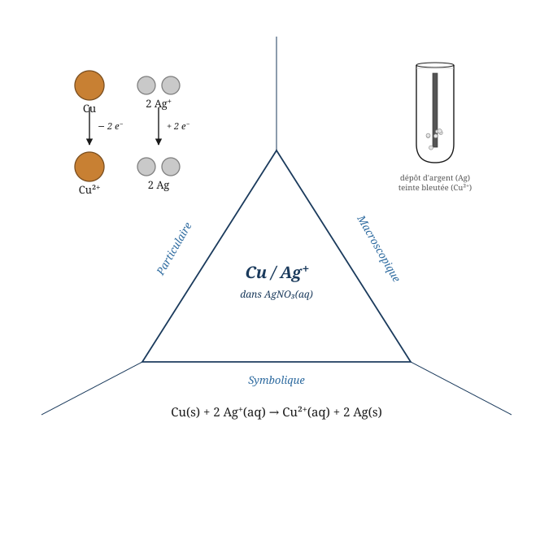
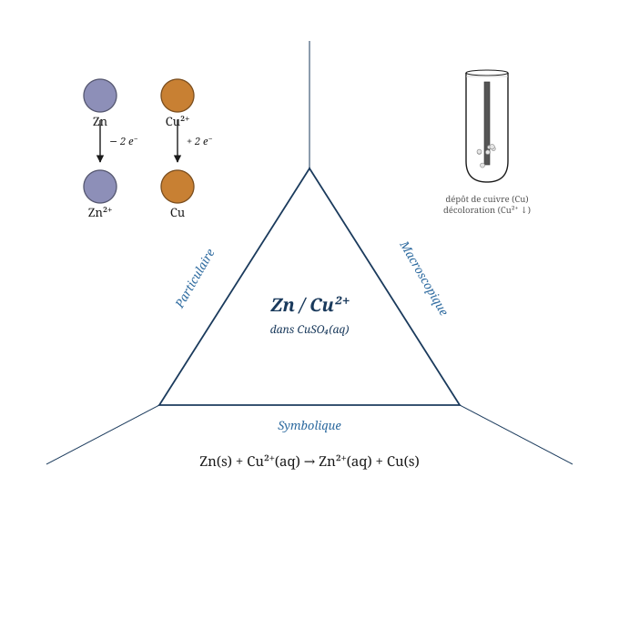
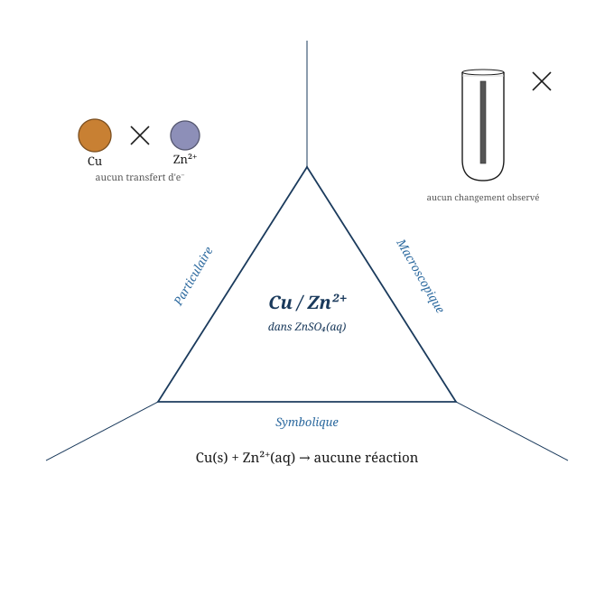
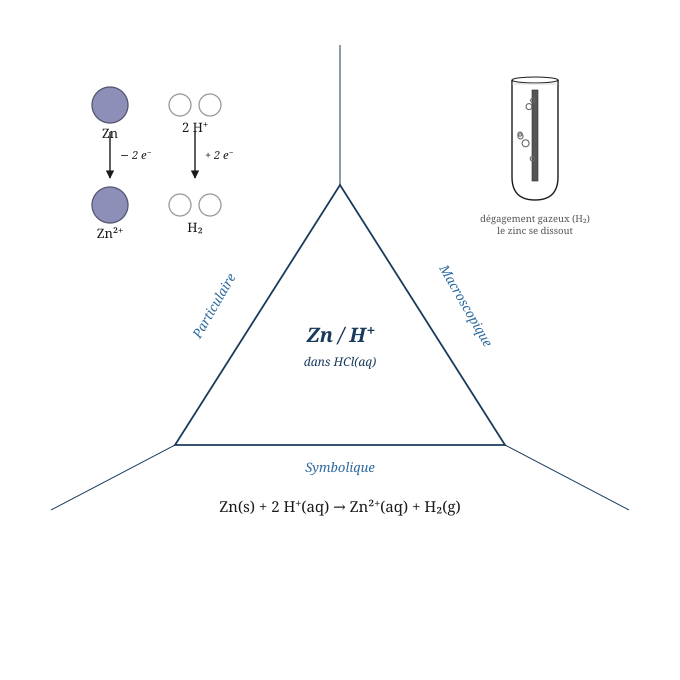
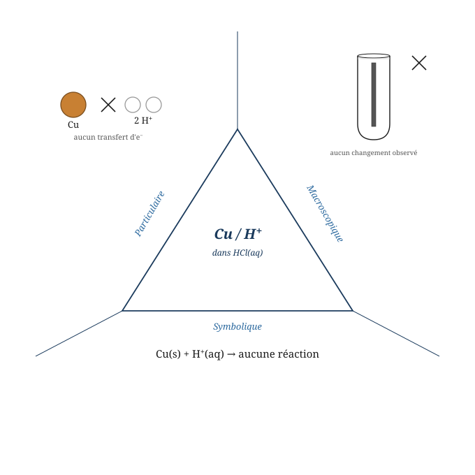

7 Oxydoréduction, piles et électrolyse
Une remarque ? Écrivez-nous — coquille, question, suggestion.
Confort — Vous savez déjà que les atomes échangent ou partagent des électrons pour former des liaisons chimiques. Vous connaissez la notion d’électronégativité : certains atomes attirent les électrons plus fortement que d’autres. Vous avez également manipulé des ions — des entités qui ont perdu ou gagné des électrons — et vous avez équilibré des équations chimiques en respectant la conservation des atomes.
Proximal — Ce chapitre généralise ces échanges d’électrons à un nouveau type de réaction : l’oxydoréduction. Vous apprendrez à attribuer un degré d’oxydation à chaque atome d’un composé — une charge fictive qui rend les transferts d’électrons visibles même dans les liaisons covalentes. Vous distinguerez l’oxydant du réducteur, et vous découvrirez la série électrochimique, un outil qui permet de prédire si une réaction a lieu spontanément.
Dépassement — À la fin de ce chapitre, vous serez capable d’équilibrer une réaction rédox complexe par la méthode des demi-réactions, de calculer la force électromotrice d’une pile et de prévoir les produits d’une électrolyse. Vous comprendrez comment une réaction chimique spontanée peut être convertie en courant électrique — et inversement.
Projet-Balmer Dernière mise à jour : 2026-05-01
Vous savez déjà que…
- L’électronégativité mesure la tendance d’un atome à attirer les électrons d’une liaison vers lui — l’oxygène est plus électronégatif que le soufre, le fluor est le plus électronégatif de tous les éléments.
- Un ion est un atome ou un groupe d’atomes ayant perdu ou gagné un ou plusieurs électrons : le sodium perd un électron pour donner \(\ce{Na+}\), le chlore en gagne un pour donner \(\ce{Cl-}\).
- Équilibrer une équation chimique revient à égaliser le nombre d’atomes de chaque élément de part et d’autre de la flèche, en ajustant les coefficients stœchiométriques.
Mini-test de positionnement — répondez avant de continuer :
- Dans la molécule \(\ce{H2O}\), quel atome attire davantage les électrons des liaisons \(\ce{O-H}\) vers lui ? Pourquoi ?
- Quelle est la charge de l’ion formé lorsqu’un atome de magnésium perd deux électrons ?
- Equilibrez l’équation suivante : \(\ce{Fe + O2 -> Fe2O3}\)
Si vous répondez sans hésiter -> vous êtes dans votre zone de confort, passez directement à la Zone 2.
Projet-Balmer Dernière mise à jour : 2026-05-01
7.0.1 Le degré d’oxydation
Nous avions vu dans la description de sels et molécules que la lecture de la différence d’électronégativité est mise à disposition pour analyser les liaisons chimiques, qu’elles soient ioniques ou covalentes.
Nous allons reprendre cet outil ici afin de définir l’état d’oxydation dans lequel se trouve tout atome. La différence importante avec notre manière d’utiliser cet outil précédemment est qu’ici, nous ne considérons plus la barrière théorique du \(\Delta\text{EN} \leq 0{,}4\). Nous allons considérer que tout atome partageant une liaison et présentant une différence d’électronégativité, soit gagne, soit perd des électrons.
Formalisation IUPAC : Le nombre d’oxydation (n.o.), ou degré d’oxydation (d.o.), est le nombre de charges électriques élémentaires réelles ou fictives que porte un atome au sein d’une espèce chimique (molécule, radical ou ion). Ce nombre, qui décrit l’état d’oxydation de l’atome, caractérise l’état électronique de l’élément chimique correspondant en considérant la charge réelle (dans le cas d’un ion monoatomique) ou fictive (si cet élément est combiné).
Au niveau particulaire : Dans une liaison entre deux atomes d’électronégativité différente, on attribue fictivement tous les électrons liants à l’atome le plus électronégatif. Si les deux atomes sont identiques, la liaison ne contribue pas — chacun garde ses électrons. Dans un corps simple (\(\ce{O2}\), \(\ce{N2}\), \(\ce{S8}\)), le degré d’oxydation est donc toujours nul.
Conception courante : On pourrait croire que le degré d’oxydation correspond toujours à la charge partielle (delta+ ou delta-) d’un atome dans une substance. Ce n’est pas exact. Dans un composé covalent comme \(\ce{CH4}\), il s’agit d’une charge fictive — calculée en faisant comme si toutes les liaisons étaient ioniques. Le degré d’oxydation applique la même convention aux électrons : l’atome le plus électronégatif les “prend tous” fictivement. Dans la réalité, les électrons ne sont pas entièrement transférés dans une liaison covalente — c’est précisément pourquoi on parle de charge fictive.
Exemple travaillé — \(\ce{SO2}\) :
L’oxygène est plus électronégatif que le soufre. Par la règle 2, chaque \(\ce{O}\) a un d.o. de \(-2\). La somme des d.o. doit être nulle (molécule neutre) :
\[d.o.(S) + 2 \times (-2) = 0 \implies d.o.(S) = +4\]
Le soufre a donc un d.o. de \(+4\) dans \(\ce{SO2}\). Autrement dit, dans le dioxyde de soufre \(\ce{SO2}\), l’oxygène est plus électronégatif que le soufre. Comme ils sont doublement liés, l’atome de soufre a fictivement perdu deux électrons pour chaque double liaison S=O. Il porte donc au total une charge fictive de \(+4\) et a un nombre d’oxydation de \(+4\) ; chaque oxygène a quant à lui gagné deux électrons et a donc un nombre d’oxydation de \(-2\).
Exemple travaillé — \(\ce{H2S}\) ; \(\ce{SO}\) et \(\ce{SO3}\) :
Remarquez que la somme de tous les nombres d’oxydation d’une molécule ou d’un composé neutre est nécessairement égale à zéro. Dans le cas d’un ion, par contre, cette somme sera égale à la charge de l’ion.
- \(\ce{H2S}\) : H = \(+1\) (règle 3), donc \(2 \times (+1) + d.o.(S) = 0 \implies d.o.(S) = -2\).
- \(\ce{SO}\) : O = \(-2\) (règle 2), donc \(d.o.(S) + (-2) = 0 \implies d.o.(S) = +2\).
- \(\ce{SO3}\) : O = \(-2\) (règle 2), donc \(d.o.(S) + 3 \times (-2) = 0 \implies d.o.(S) = +6\).
Un même élément — ici le soufre — peut donc adopter des degrés d’oxydation très différents selon son environnement chimique.
Exemple travaillé — \(\ce{SO3^{2-}}\) et \(\ce{SO4^{2-}}\) :
Pour \(\ce{SO3^{2-}}\), la somme des d.o. doit être égale à la charge de l’ion (\(-2\)) :
\[d.o.(S) + 3 \times (-2) = -2 \implies d.o.(S) = +4\]
Pour \(\ce{SO4^{2-}}\), même raisonnement :
\[d.o.(S) + 4 \times (-2) = -2 \implies d.o.(S) = +6\]
Vous savez maintenant sur quel principe repose l’attribution d’un degré d’oxydo-réduction pour un atome dans un composé, qu’il soit covalent ou ionique.
Cette charge fictive se calcule, dans le cas des molécules, en considérant que l’élément : - possède tous les électrons des liaisons chimiques établies avec les atomes moins électronégatifs que lui, ce qui se traduit donc pour lui par un gain d’électron(s) ; - ne possède aucun des électrons des liaisons chimiques établies avec les atomes plus électronégatifs que lui, ce qui se traduit par une perte d’électron(s).
En réalité, sauf dans le cas où la différence d’électronégativité entre deux éléments est très importante, les liaisons sont covalentes et présentent un caractère ionique partiel, ce qui signifie qu’il y a un transfert de charge partiel entre les atomes liés.
Si l’électronégativité des deux atomes liés est la même (par exemple, si les atomes liés sont un même élément), alors la liaison ne contribue pas au calcul du n.o. Ainsi, dans un corps simple, un élément est caractérisé par un nombre d’oxydation nul.
Exemple travaillé — \(\ce{O2}\) ; \(\ce{N2}\) et \(\ce{S8}\) :
Ces trois corps simples ont un d.o. nul : \(\ce{O2^{0}}\), \(\ce{N2^{0}}\), \(\ce{S8^{0}}\). Dans chaque cas, les deux atomes liés sont identiques, donc de même électronégativité : aucun électron n’est fictivement attribué à l’un plutôt qu’à l’autre, conformément à la règle 1.
Représentation symbolique : Cinq règles pratiques permettent de calculer le d.o. sans passer par la structure développée :
| Règle | Enoncé | Exemples | Exceptions |
|---|---|---|---|
| 1 | Tout élément libre a un d.o. de 0 | \(\ce{H2}\), \(\ce{O2}\), \(\ce{Mg}\), \(\ce{P4}\) | — |
| 2 | L’oxygène a un d.o. de \(-2\) | \(\ce{H2O}\), \(\ce{MgO}\), \(\ce{SO3}\) | Peroxydes : \(\ce{H2O2}\) (\(-1\)) |
| 3 | L’hydrogène a un d.o. de \(+1\) | \(\ce{H2O}\), \(\ce{CH4}\), \(\ce{HCl}\) | Hydrures métalliques : \(\ce{LiH}\) (\(-1\)) |
| 4 | Métaux des colonnes principales : d.o. = numéro de colonne | \(\ce{NaCl}\) (\(+1\)), \(\ce{CaSO4}\) (\(+2\)), \(\ce{AlF3}\) (\(+3\)) | — |
| 5 | La somme des d.o. d’un groupe est égale à sa charge | \(\ce{H2SO4}\) : somme \(= 0\) ; \(\ce{NO3-}\) : somme \(= -1\) | — |
Exercices :
- Déterminez le d.o. de chaque élément dans \(\ce{KCl}\), \(\ce{AlF3}\), \(\ce{H2CO3}\), \(\ce{NH3}\), \(\ce{CO2}\), \(\ce{He}\), \(\ce{CCl4}\), \(\ce{CaBr2}\), \(\ce{NaHSO4}\), \(\ce{H2O2}\).1
- Quel est le d.o. du manganèse dans \(\ce{KMnO4}\) ?2
- Quel est le d.o. du chrome dans \(\ce{K2Cr2O7}\) ?3
- Déterminez le d.o. de l’oxygène dans \(\ce{H2O2}\). Pourquoi est-ce une exception à la règle 2 ?4
- Déterminez le d.o. de l’oxygène dans \(\ce{NaClO}\). Connaissez-vous cette substance ? Que pourrait-on dire du comportement de cette substance : plutôt demandeuse d’électrons ou donneuse d’électrons ? Pourquoi ?5
- Déterminez le d.o. de chaque élément dans \(\ce{CaSO4}\), \(\ce{PbSO4}\), \(\ce{MgCO3}\), \(\ce{Fe2(SO4)3}\).6
Les substances contenant plusieurs carbones sont intéressantes à étudier en détail, car elles nous révèlent qu’à partir d’une formule brute nous n’aurons accès qu’à une moyenne des états d’oxydation des carbones. Ces moyennes peuvent surprendre, mais elles sont absolument explicables lorsque nous regardons la formule développée :
Exemple travaillé — Glucose (\(\ce{C6H12O6}\)) et acide stéarique (\(\ce{C18H36O2}\)) :
Ces deux molécules ne contiennent qu’un seul type de carbone visible dans la formule brute ; on ne peut donc calculer qu’un d.o. moyen du carbone, pas le d.o. réel de chaque atome de carbone pris individuellement (celui-ci dépend de son environnement exact dans la formule développée).
- Glucose (\(\ce{C6H12O6}\)) : H = \(+1\) (règle 3, \(\times 12 = +12\)) ; O = \(-2\) (règle 2, \(\times 6 = -12\)). La molécule étant neutre :
\[6 \times d.o.(C) + 12 - 12 = 0 \implies d.o.(C) = 0 \ \text{(moyenne)}\]
- Acide stéarique (\(\ce{C18H36O2}\)) : H = \(+1\) (\(\times 36 = +36\)) ; O = \(-2\) (\(\times 2 = -4\)). La molécule étant neutre :
\[18 \times d.o.(C) + 36 - 4 = 0 \implies d.o.(C) = -\frac{32}{18} \approx -1{,}78 \ \text{(moyenne)}\]
R3 — Point de vigilance : un d.o. moyen non entier n’est pas une erreur de calcul — il traduit le fait que tous les atomes de carbone de la molécule n’ont pas le même environnement chimique (certains sont liés à plusieurs oxygènes, d’autres seulement à des hydrogènes et d’autres carbones). La formule brute masque cette hétérogénéité ; seule la formule développée donnerait le d.o. réel de chaque carbone.
7.0.2 Réaction d’oxydo-réduction : oxydation, réduction et demi-réactions
Une réaction d’oxydoréduction (ou réaction redox) est une transformation chimique caractérisée par un transfert d’électrons entre deux espèces chimiques. S’il y a transfert d’électrons, il y aura donc modification de l’état d’oxydation du donneur d’électrons et modification de l’état d’oxydation de l’accepteur d’électrons.
7.0.2.1 La demi-réaction et son sens de lecture
Toute réaction d’oxydoréduction se décompose en deux demi-réactions : l’une décrit une perte d’électrons (oxydation), l’autre un gain d’électrons (réduction).
Dans la série électrochimique, les demi-réactions sont écrites dans le sens de la réduction (de gauche à droite) :
\[\ce{Cu^{2+} + 2e^{-} -> Cu^{0}}\]
Pour obtenir la demi-réaction d’oxydation, on lit la même équation en sens inverse :
\[\ce{Cu^{0} -> Cu^{2+} + 2e^{-}}\]
Attention : une demi-réaction seule ne peut jamais se produire. Les électrons libérés par l’oxydation doivent obligatoirement être captés par une réduction. Les deux demi-réactions sont toujours couplées.
Formalisation IUPAC :
- Le processus d’oxydation est une perte d’électrons — le d.o. de l’atome qui s’oxyde, l’atome qui donne son ou ses électrons, augmente donc. Nous disons que cet atome est le réducteur ; il deviendra l’oxydé, car il réduit le d.o. d’un autre atome qui reçoit le ou les électrons.
- Le processus de réduction est un gain d’électrons — le d.o. de l’atome qui se réduit, l’atome qui reçoit les électrons, diminue. Nous disons que cet atome est l’oxydant, car il prend les électrons d’un autre atome, et donc l’oxyde ; il deviendra le réduit.
- Le réducteur est l’espèce qui cède des électrons — il subit lui-même une oxydation.
- L’oxydant est l’espèce qui capte des électrons — il subit lui-même une réduction.
Pour nous permettre d’avoir un moyen de nous rappeler ces termes, nous pouvons penser à l’oxygène de l’air, \(\ce{O2}\), d.o. \(= 0\). L’oxygène \(\ce{O2}\) est un oxydant par excellence. Mais attention, nous parlons bien ici de l’oxygène corps pur, le \(\ce{O2}\), en d.o. \(= 0\).
Comment fait-on perdre des électrons à un métal dans la pratique ?
7.0.2.2 Métal vs non-métal
L’une des possibilités est de mettre en présence un non-métal qui cherche à gagner des électrons : le métal perd un ou plusieurs électrons au profit du non-métal et il y a formation d’une liaison ionique.
Ainsi, lorsqu’un métal a perdu des électrons et que le non-métal les a gagnés, leurs propriétés changent radicalement, comme le montrent les quelques exemples ci-dessous :
Exemple : l’aluminium \(\ce{Al^{0}}\) réagit avec le dibrome \(\ce{Br2}\).
Exemple : le magnésium \(\ce{Mg^{0}}\) réagit avec le dioxygène \(\ce{O2}\).
Exemple : le cuivre métallique \(\ce{Cu^{0}}\) réagit avec l’acide nitrique \(\ce{HNO3}\).
7.0.2.3 Cation métallique vs non-métal
Nous pouvons aussi voir une réaction d’échange d’électrons entre un non-métal et un cation métallique :
Exemple : l’oxyde de fer (III) réagit avec le gaz hydrogène \(\ce{H2}\).
7.0.2.4 Métal vs cation métallique
Il n’est pas nécessaire de mettre en présence un non-métal pour observer des échanges d’électrons.
7.0.2.4.1 Exemple : \(\ce{Cu^{0}}\) + \(\ce{AgNO3}\) (aq)
Prenons du cuivre à l’état métallique et plongeons-le dans une solution aqueuse de nitrate d’argent, \(\ce{AgNO3}\) (aq).
Dans cet exemple, qui sont les acteurs redox possibles ? Nous avons ici quatre espèces à considérer séparément : \(\ce{Cu^{0}}\), \(\ce{Ag^{+}}\), \(\ce{NO3^{-}}\) et \(\ce{H2O}\). Nous verrons plus loin que \(\ce{NO3^{-}}\) et \(\ce{H2O}\) ne réagissent pas dans cette réaction et ont un statut de spectateur. Il est important de se souvenir que plusieurs substances restent à l’état de spectateurs dans les réactions. - Qui est ainsi le donneur d’électrons — le réducteur ? Le cuivre métallique \(\ce{Cu^{0}}\). - Qui est le preneur d’électrons — l’oxydant ? Le cation argent(I) \(\ce{Ag^{+}}\).
Représentation symbolique — les demi-réactions :
On décompose toute réaction rédox en deux demi-réactions :
\[\ce{Cu^{0} -> Cu^{2+} + 2e^{-}} \quad \text{(oxydation — d.o. : } 0 \to +2\text{)}\] \[\ce{Ag^{+} + e^{-} -> Ag^{0}} \quad \text{(réduction — d.o. : } +1 \to 0\text{)}\]
Ces deux réactions (qu’on appelle des demi-réactions) ne pouvant avoir lieu l’une sans l’autre, on les réunit en une équation globale.
Cependant, dans le cas présent, une petite précaution s’impose: si on ne veut pas voir apparaître des électrons dans l’équation globale (et on ne le veut pas !) il faut ajuster le nombre d’électrons perdus et gagnés:
\[\ce{Cu^{0} + 2Ag^{+} -> Cu^{2+} + 2Ag^{0}}\]
Ceci est une équation ionique, qui ne représente que les espèces qui ont subi une transformation. Bien entendu, il y a aussi en solution les ions \(\ce{NO3^{-}}\), qui assurent la neutralité de l’ensemble, ainsi que l’eau.
Voici l’équation complète avec espèces spectatrices :
\[\ce{Cu^{0} + 2AgNO3 (aq) -> Cu(NO3)2 (aq) + 2Ag^{0}}\]
Observation : l’apparence orangée — « cuivrée » — du cuivre métallique disparaît progressivement au profit d’une apparence argentée. La solution prend quant à elle une teinte bleutée, de plus en plus intense. Nous déduisons que la réaction est en train de se produire, libérant des ions \(\ce{Cu^{2+}}\) (bleus) et produisant de l’argent métallique \(\ce{Ag^{0}}\) sur le métal \(\ce{Cu^{0}}\).

Examinons à nouveau les noms attitrés aux espèces.
Gardons en tête qu’il y a presque une notion de temporalité : le réducteur et l’oxydant sont les acteurs de départ (réactifs, avant la réaction), l’oxydé et le réduit en sont le résultat (produits, après la réaction).
- Dans cette expérience, l’argent \(\ce{Ag^{+}}\) va subir une réduction : il est donc appelé l’oxydant.
- Le cuivre \(\ce{Cu^{0}}\) va agir comme un réducteur : il va donc subir une oxydation.
- Dans cette expérience, le cuivre \(\ce{Cu^{2+}}\) a subi une oxydation : il est appelé l’oxydé.
- L’argent \(\ce{Ag^{0}}\) est donc appelé le réduit.
Conception courante : On pourrait associer “oxydation” au seul contact avec l’oxygène. On comprend ici que l’oxydation est un concept bien général : tout transfert d’électrons constitue une oxydation, que de l’oxygène soit impliqué ou non.
Au niveau particulaire : Lors d’une réaction rédox, des électrons migrent du réducteur vers l’oxydant. Ce transfert modifie les degrés d’oxydation des deux espèces. Le nombre d’électrons perdus est exactement égal au nombre d’électrons gagnés — les électrons ne disparaissent jamais.
7.0.2.4.2 Exemple travaillé : expérience \(\ce{Zn^{0}}\) dans \(\ce{CuSO4}\) (aq)
Une lame de zinc est plongée dans une solution de sulfate de cuivre \(\ce{CuSO4}\) (aq) (solution bleue, caractéristique du cation \(\ce{Cu^{2+}}\)).
Qui sont les acteurs possibles ? \(\ce{Zn^{0}}\), \(\ce{Cu^{2+}}\), \(\ce{SO4^{2-}}\) et \(\ce{H2O}\). Comme mentionné plus haut, nous affirmons pour l’instant que \(\ce{SO4^{2-}}\) et \(\ce{H2O}\) sont spectateurs. Les deux acteurs principaux sont \(\ce{Zn^{0}}\) et \(\ce{Cu^{2+}}\).
Qui peut donner des électrons — être réducteur ? \(\ce{Zn^{0}}\). Qui peut prendre des électrons — être oxydant ? \(\ce{Cu^{2+}}\).
Demi-réaction d’oxydation : \[\ce{Zn^{0} -> Zn^{2+} + 2e^{-}}\]
Demi-réaction de réduction : \[\ce{Cu^{2+} + 2e^{-} -> Cu^{0}}\]
Équation globale — sans ion spectateur : \[\ce{Zn^{0} + Cu^{2+} -> Zn^{2+} + Cu^{0}}\]
Équation globale — avec espèces spectatrices : \[\ce{Zn^{0} + CuSO4 (aq) -> ZnSO4 (aq) + Cu^{0}}\]
Observation : la couleur bleue de la solution pâlit progressivement, devient plus claire. Le morceau de zinc immergé dans la solution se couvre d’une apparence rougeâtre « cuivrée ». Moins visible, mais nous pouvons conclure que le zinc \(\ce{Zn^{0}}\) métallique se dissout progressivement sous la forme de \(\ce{Zn^{2+}}\) (aq) et que du cuivre rougeâtre se dépose sur la lame. La réaction est favorable !

7.0.2.4.3 Exemple travaillé : expérience \(\ce{Cu^{0}}\) dans \(\ce{ZnSO4}\) (aq)
Une lame de cuivre est plongée dans une solution de sulfate de zinc \(\ce{ZnSO4}\) (aq).
Qui sont les acteurs possibles ? \(\ce{Cu^{0}}\), \(\ce{Zn^{2+}}\), \(\ce{SO4^{2-}}\) et \(\ce{H2O}\). Comme mentionné plus haut, nous continuons à affirmer que \(\ce{SO4^{2-}}\) et \(\ce{H2O}\) sont spectateurs. Les deux acteurs principaux sont \(\ce{Cu^{0}}\) et \(\ce{Zn^{2+}}\).
Qui peut donner des électrons — être réducteur ? \(\ce{Cu^{0}}\). Qui peut prendre des électrons — être oxydant ? \(\ce{Zn^{2+}}\).
Observation : rien ne se passe : la lame de cuivre reste parfaitement intacte, nous ne voyons ni dépôt de \(\ce{Zn^{0}}\) sur sa surface, ni apparition d’une couleur bleue dans la solution (\(\ce{Cu^{2+}}\)).

Conclusions : nous constatons que le transfert d’électrons n’est pas symétrique entre \(\ce{Cu^{0}}\) face à \(\ce{Zn^{2+}}\) et \(\ce{Cu^{2+}}\) face à \(\ce{Zn^{0}}\) : seul l’un des deux sens est spontané, ou favorable.
Les réactions qui se passent (ici, dans les expériences 1 et 2), sont dites spontanées.
Avec ses trois expériences réalisées, nous pouvons déjà ébaucher une modeste classification de la tendance des éléments à prendre des électrons.
Introduisons les demi réactions du cuivre, de l’argent et du zinc dans un tableau.
| Tendance à prendre des électrons | Équations de réduction |
| Forte | \[\ce{Ag^{+} + e^{-} -> Ag^{0}}\] |
| Moyenne | \[\ce{Cu^{2+} + 2e^{-} -> Cu^{0}}\] |
| Faible | \[\ce{Zn^{2+} + 2e^{-} -> Zn^{0}}\] |
7.0.2.4.4 Exemple travaillé : expérience \(\ce{Zn^{0}}\) dans \(\ce{HCl}\) (aq)
Une lame de zinc est plongée dans une solution d’acide chlorhydrique \(\ce{HCl}\) (aq). L’acide chlorhydrique suit le comportement acide dans l’eau, c’est-à-dire que l’acide \(\ce{HCl}\) se sépare en deux suivant la réaction \[\ce{HCl (aq) -> H^{+} (aq) + Cl^{-} (aq)}\] car \(\ce{H^{+}}\) préfère résider sur l’eau : \[\ce{H^{+} (aq) + H2O (l) -> H3O^{+} (aq)}\]
Ceci est traité de manière plus détaillée dans le thème acide-base.
Toutefois, comprenons que mettre un acide dans l’eau produit des \(\ce{H^{+}}\), ou plus précisément des \(\ce{H3O^{+}}\).
Est-ce que \(\ce{H^{+}}\) joue un rôle d’oxydant ou de réducteur ? De réducteur ? Non, impossible, il n’a pas d’électron. D’oxydant ? Oui, il peut capter un électron et aboutir à la formation du gaz hydrogène \(\ce{H2}\) avec un de ses semblables.
Ainsi, qui sont les acteurs possibles dans cette réaction ? \(\ce{Zn^{0}}\), \(\ce{H^{+}}\), \(\ce{Cl^{-}}\) et \(\ce{H2O}\). Comme mentionné plus haut, nous continuons à affirmer que \(\ce{Cl^{-}}\) et \(\ce{H2O}\) sont spectateurs. Les deux acteurs principaux sont \(\ce{Zn^{0}}\) et \(\ce{H^{+}}\).
Qui peut donner des électrons — être réducteur ? \(\ce{Zn^{0}}\). Qui peut prendre des électrons — être oxydant ? \(\ce{H^{+}}\).
Demi-réaction d’oxydation : \[\ce{Zn^{0} -> Zn^{2+} + 2e^{-}}\]
Demi-réaction de réduction : \[\ce{2H^{+} + 2e^{-} -> H2}\]
Équation globale — sans ion spectateur : \[\ce{Zn^{0} + 2H^{+} -> Zn^{2+} + H2}\]
Équation globale — avec espèces spectatrices : \[\ce{Zn^{0} + 2HCl (aq) -> ZnCl2 (aq) + H2}\]
Observation : sur la lame de zinc \(\ce{Zn^{0}}\) apparaissent des bulles de gaz. La production de gaz est évidente. Le gaz peut être récolté dans une éprouvette, et un tison incandescent met en évidence la présence d’hydrogène gazeux. Après quelques instants, le métal zinc a disparu et le gaz cesse d’être produit. La réaction est favorable !

7.0.2.4.5 Exemple travaillé : expérience \(\ce{Cu^{0}}\) dans \(\ce{HCl}\) (aq)
Une lame de cuivre est finalement plongée dans une solution d’acide chlorhydrique \(\ce{HCl}\) (aq).
Qui sont les acteurs possibles dans cette réaction ? \(\ce{Cu^{0}}\), \(\ce{H^{+}}\), \(\ce{Cl^{-}}\) et \(\ce{H2O}\). Comme mentionné plus haut, nous continuons à affirmer que \(\ce{Cl^{-}}\) et \(\ce{H2O}\) sont spectateurs. Les deux acteurs principaux sont \(\ce{Cu^{0}}\) et \(\ce{H^{+}}\).
Qui peut donner des électrons — être réducteur ? \(\ce{Cu^{0}}\). Qui peut prendre des électrons — être oxydant ? \(\ce{H^{+}}\).
Observation : aucun gaz ne se produit. Le cuivre reste intact — aucune transformation n’est observée. La réaction n’est pas favorable !

On revient ainsi au tableau ci-dessus et nous pouvons y ajouter une ligne :
| Tendance à prendre des électrons | Équations de réduction |
| Forte | \[\ce{Ag^{+} + e^{-} -> Ag^{0}}\] |
| Moyenne | \[\ce{Cu^{2+} + 2e^{-} -> Cu^{0}}\] |
| \[\ce{2H^{+} + 2e^{-} -> H2}\] | |
| Faible | \[\ce{Zn^{2+} + 2e^{-} -> Zn^{0}}\] |
Ce petit tableau devrait nous permettre de prévoir quelle est la réaction spontanée entre le zinc métallique \(\ce{Zn^{0}}\) et l’ion argent \(\ce{Ag^{+}}\)…
Dans la pratique, on dispose d’une liste plus étoffée, appelée série électrochimique, qui permet de prédire quelle sera la réaction spontanée entre deux espèces sans devoir faire l’expérience pratique.
Exercices :
- Dans \(\ce{Fe^0 + 2HCl -> FeCl2 + H2}\), identifiez l’oxydant et le réducteur en justifiant par les d.o.7
- Le magnésium réagit avec le dioxygène : \(\ce{2Mg + O2 -> 2MgO}\). Écrivez les deux demi-réactions.8
- Dans \(\ce{Fe^{3+} + Sn^{2+} -> Fe^{2+} + Sn^{4+}}\), quel élément est oxydé ? Quel élément est réduit ?9
- La réaction \(\ce{CO2 + H2O -> H2CO3}\) est-elle une oxydoréduction ? Justifiez par les d.o.10
7.0.3 La série électrochimique
La règle du gamma et la spontanéité
La série électrochimique classe les couples rédox par potentiel de réduction croissant. La règle du gamma permet de prédire si une réaction entre deux couples est spontanée :
Proximal — Le meilleur réducteur (potentiel le plus bas, en bas à gauche de la série) réagit spontanément avec le meilleur oxydant (potentiel le plus élevé, en haut à droite). On dessine un \(\gamma\) entre les deux demi-réactions pour visualiser le sens spontané.
Exemple : entre \(\ce{Zn^{2+}/Zn^{0}}\) (\(E^\circ = -0{,}76\ \text{V}\)) et \(\ce{Cu^{2+}/Cu^{0}}\) (\(E^\circ = +0{,}34\ \text{V}\)) :
- \(\ce{Zn^{0}}\) est le meilleur réducteur — il s’oxyde.
- \(\ce{Cu^{2+}}\) est le meilleur oxydant — il se réduit.
- La réaction spontanée est donc :
\[\ce{Zn^{0} + Cu^{2+} -> Zn^{2+} + Cu^{0}}\]
Si la règle du gamma n’est pas respectée, la réaction n’est pas spontanée — elle nécessiterait un apport d’énergie extérieure (ce sera précisément le principe de l’électrolyse, étudiée plus loin dans ce chapitre).
Conception courante : On croit parfois que tous les métaux réagissent avec tous les acides ou tous les ions métalliques. La série électrochimique montre que ce n’est pas le cas : chaque couple possède une tendance précise et mesurable à céder ou capter des électrons.
Analogie : Imaginez un classement de sportifs par niveau. Lors d’un duel, c’est toujours le mieux classé qui l’emporte. La série électrochimique classe les couples rédox selon leur tendance à capter des électrons — et prédit qui “gagne” face à qui. Limite : dans un tournoi sportif, le résultat peut varier selon le jour — en chimie, sous les conditions standard, le résultat est déterminé uniquement par les potentiels, sans exception.
Formalisation IUPAC : La série électrochimique est un classement de demi-réactions de réduction, accompagnées de leur potentiel standard de réduction \(E^\circ\) exprimé en volts, mesuré par rapport à l’électrode standard à hydrogène (\(E^\circ = 0{,}00\ \text{V}\) par convention).
- Plus \(E^\circ\) est élevé : l’espèce est un bon oxydant — elle se réduit facilement.
- Plus \(E^\circ\) est bas : l’espèce est un bon réducteur — elle s’oxyde facilement.
R2 — Bootstrapping : Nous utilisons ici la notion de potentiel électrique standard \(E^\circ\), dont la signification physique complète sera approfondie plus loin dans ce chapitre, lorsque nous aborderons les piles. Pour l’instant, retenez qu’il s’agit d’une mesure de la tendance d’un couple à capter des électrons.
Au niveau particulaire : Chaque demi-réaction est réversible. La direction effectivement observée dépend du partenaire. Lorsque deux couples sont mis en présence, c’est le réducteur du couple de \(E^\circ\) le plus bas qui cède ses électrons à l’oxydant du couple de \(E^\circ\) le plus élevé.
Remarque importante : \(\ce{H+}\) et \(\ce{H3O+}\) correspondent à la même demi-réaction (\(E^\circ = 0{,}00\ \text{V}\)) — les deux notations sont strictement équivalentes.
Représentation symbolique : Extrait de la série électrochimique :
| Demi-réaction de réduction | \(E^\circ\) (V) |
|---|---|
| \(\ce{F2 + 2e- -> 2F-}\) | \(+2{,}87\) |
| \(\ce{Cl2 + 2e- -> 2Cl-}\) | \(+1{,}36\) |
| \(\ce{Ag+ + e- -> Ag^0}\) | \(+0{,}80\) |
| \(\ce{Cu^{2+} + 2e- -> Cu^0}\) | \(+0{,}34\) |
| \(\ce{2H+ + 2e- -> H2}\) | \(0{,}00\) |
| \(\ce{Fe^{2+} + 2e- -> Fe^0}\) | \(-0{,}44\) |
| \(\ce{Zn^{2+} + 2e- -> Zn^0}\) | \(-0{,}76\) |
| \(\ce{Mg^{2+} + 2e- -> Mg^0}\) | \(-2{,}37\) |
| \(\ce{Li+ + e- -> Li^0}\) | \(-3{,}04\) |
Exercices :
- Dans la série, quel métal est le meilleur réducteur parmi \(\ce{Fe}\), \(\ce{Zn}\), \(\ce{Cu}\) et \(\ce{Ag}\) ?11
- Le cuivre peut-il réagir avec une solution d’acide chlorhydrique ? Justifiez par les potentiels.12
- Le zinc réagit-il avec une solution de \(\ce{AgNO3}\) ?13
- Classez les oxydants suivants du plus faible au plus fort : \(\ce{Fe^{2+}}\), \(\ce{Cl2}\), \(\ce{Cu^{2+}}\), \(\ce{H+}\).14
7.0.3.1 La règle du gamma et prédiction de favorabilité (spontanéité)
Conception courante : On pense parfois que la règle du gamma est une loi universelle indépendante du format de la série utilisée. Son application graphique dépend en réalité de l’orientation de la série fournie — il faut toujours vérifier si les potentiels sont classés de haut en bas ou de bas en haut avant de tracer le gamma.
Formalisation IUPAC : Une réaction rédox est spontanée si et seulement si la force électromotrice standard est positive :
\[\Delta V^\circ = E^\circ_{\text{cathode}} - E^\circ_{\text{anode}} > 0\]
où \(E^\circ_{\text{cathode}}\) est le potentiel du couple qui se réduit (l’oxydant) et \(E^\circ_{\text{anode}}\) est le potentiel du couple qui s’oxyde (le réducteur).
Au niveau particulaire : Lors d’un transfert d’électrons spontané, les électrons quittent le réducteur — dont le couple possède le \(E^\circ\) le plus bas — pour rejoindre l’oxydant — dont le couple possède le \(E^\circ\) le plus élevé. Ce mouvement est thermodynamiquement favorable : il correspond à une diminution de l’énergie libre du système. Si le sens est inversé, le transfert ne se produit pas spontanément.
Représentation symbolique — la règle du gamma :
On repère les deux couples sur la série électrochimique et on relie graphiquement l’oxydant (haut) au réducteur (bas) par un trait en forme de \(\gamma\) :
\[\text{Ox}_1 \text{ (haut)} + \text{Red}_2 \text{ (bas)} \longrightarrow \text{Red}_1 + \text{Ox}_2 \quad \text{(spontané)}\]
Attention : Certaines éditions de la série électrochimique présentent les potentiels en ordre inverse (meilleurs réducteurs en haut). Dans ce cas, la règle du gamma s’applique en miroir. Vérifiez toujours l’orientation de la série fournie avant d’appliquer la règle graphique.
Exemple travaillé — entre \(\ce{Zn}\) et \(\ce{H3O+}\) :
- \(E^\circ(\ce{Zn^{2+}/Zn}) = -0{,}76\ \text{V}\) → Zn est le réducteur (anode)
- \(E^\circ(\ce{2H+/H2}) = 0{,}00\ \text{V}\) → \(\ce{H3O+}\) est l’oxydant (cathode)
\[\Delta V^\circ = 0{,}00 - (-0{,}76) = +0{,}76\ \text{V} > 0 \quad \text{spontané}\]
\[\ce{Zn^0 + 2H3O+ -> Zn^{2+} + H2 + 2H2O}\]
Exemple travaillé — entre \(\ce{Cu}\) et \(\ce{H+}\) :
\[\Delta V^\circ = 0{,}00 - 0{,}34 = -0{,}34\ \text{V} < 0 \quad \text{non spontané}\]
Le cuivre ne réagit pas avec un acide dilué.
Exercices :
- La réaction entre \(\ce{Fe^0}\) et \(\ce{Cu^{2+}}\) est-elle spontanée ? Calculez \(\Delta V^\circ\).15
- La réaction entre \(\ce{Mg^{2+}}\) et \(\ce{Zn^0}\) est-elle spontanée ? Justifiez.16
- Entre \(\ce{F2}\) et \(\ce{Ag^0}\), prédisez la spontanéité et écrivez l’équation globale si la réaction a lieu.17
- Peut-on stocker une solution de \(\ce{CuSO4}\) dans un récipient en zinc ? Justifiez.18
- Expliquez pourquoi le cuivre résiste à \(\ce{HCl}\) mais réagit avec \(\ce{HNO3}\) concentré (\(E^\circ(\ce{NO3-/NO}) = +0{,}96\ \text{V}\)).[^19]
- [^19]: \(E^\circ(\ce{H+/H2}) = 0{,}00\ \text{V} < +0{,}34\ \text{V}\)
- \(\ce{HCl}\) ne peut pas oxyder Cu. \(E^\circ(\ce{NO3-/NO}) = +0{,}96\ \text{V} > +0{,}34\ \text{V}\) : \(\ce{HNO3}\) peut oxyder Cu.
7.0.4 Équilibrage des réactions rédox
Conception courante : On croit souvent qu’équilibrer une réaction rédox se fait comme une réaction ordinaire — en ajustant les atomes. Les réactions rédox exigent une étape supplémentaire indispensable : égaliser les électrons échangés avant d’équilibrer les atomes restants. Sans cette étape, l’équation est fausse même si les atomes semblent équilibrés.
Au niveau macroscopique : Lorsque l’on verse une solution violette de permanganate de potassium \(\ce{KMnO4}\) dans une solution d’acide chlorhydrique \(\ce{HCl}\), la solution se décolore et un gaz jaune-verdâtre de dichlore \(\ce{Cl2}\) se dégage. Ce changement observable — disparition de la couleur violette, apparition du gaz — signale un transfert d’électrons. L’équilibrage correct de cette réaction rédox est indispensable pour calculer les quantités de matière mises en jeu.
Formalisation IUPAC : Méthode des demi-réactions en quatre étapes :
- Attribuer les d.o. à chaque élément — repérer ceux qui changent.
- Écrire les deux demi-réactions avec les électrons échangés.
- Multiplier chaque demi-réaction par un coefficient pour égaliser le nombre d’électrons.
- Additionner les deux demi-réactions et équilibrer les atomes restants par tâtonnement.
Au niveau particulaire : Le principe fondamental est la conservation des électrons : chaque électron perdu par le réducteur est capté par l’oxydant. Si ce bilan n’est pas respecté, l’équation viole la conservation de la charge.
Représentation symbolique :
Exemple travaillé — \(\ce{KMnO4 + HCl + H2SO4 -> K2SO4 + MnSO4 + Cl2 + H2O}\)
Étape 1 — d.o. : - Mn : \(+7 \to +2\) (gain de 5 électrons → réduction) - Cl : \(-1 \to 0\) (perte de 1 électron → oxydation)
Étape 2 — demi-réactions : \[\ce{MnO4- + 8H+ + 5e- -> Mn^{2+} + 4H2O}\] \[\ce{2Cl- -> Cl2 + 2e-}\]
Étape 3 — égalisation (10 électrons échangés, \(\times 2\) et \(\times 5\)) : \[\ce{2MnO4- + 16H+ + 10e- -> 2Mn^{2+} + 8H2O}\] \[\ce{10Cl- -> 5Cl2 + 10e-}\]
Étape 4 — équation ionique globale : \[\ce{2MnO4- + 16H+ + 10Cl- -> 2Mn^{2+} + 5Cl2 + 8H2O}\]
Le réducteur est \(\ce{Cl-}\), l’oxydant est \(\ce{MnO4-}\).
Exercices :
- Équilibrez : \(\ce{Fe^{3+} + Sn^{2+} -> Fe^{2+} + Sn^{4+}}\)19
- Équilibrez : \(\ce{H2S + HNO3 -> NO + S + H2O}\)20
- Équilibrez : \(\ce{H2S + HCl + K2Cr2O7 -> KCl + CrCl3 + H2O + S}\)21
- Équilibrez : \(\ce{I- + NO2- + H+ -> I2 + NO + H2O}\)22
7.0.5 La combustion complète et partielle
Conception courante : On pense souvent que “brûler” signifie simplement chauffer fortement. La combustion est en réalité une réaction d’oxydoréduction : le combustible est le réducteur (réservoir d’électrons), le dioxygène est l’oxydant. Supprimer l’un des trois éléments du triangle du feu — combustible, comburant, énergie d’amorçage — arrête immédiatement la combustion.
Analogie : Le triangle du feu illustre les trois conditions nécessaires à la combustion. Limite : cette image macroscopique ne décrit pas les transferts d’électrons à l’échelle particulaire — elle reste un outil de mémoire, pas un modèle chimique.
Formalisation IUPAC : La combustion complète d’un composé ne contenant que C, H et O produit exclusivement \(\ce{CO2}\) et \(\ce{H2O}\), à condition que le dioxygène soit en excès. Méthode de construction :
- Chaque C du combustible → un \(\ce{CO2}\)
- Chaque paire H du combustible → un \(\ce{H2O}\)
- On équilibre \(\ce{O2}\) en dernier
Au niveau particulaire : Le carbone passe d’un d.o. négatif ou nul dans le combustible à \(+4\) dans \(\ce{CO2}\) — il est oxydé. L’oxygène passe de \(0\) dans \(\ce{O2}\) à \(-2\) — il est réduit. La combustion est donc bien une réaction rédox.
Représentation symbolique :
\[\ce{CH4 + 2O2 -> CO2 + 2H2O} \quad \text{(méthane)}\]
\[\ce{2C4H10 + 13O2 -> 8CO2 + 10H2O} \quad \text{(butane)}\]
\[\ce{2C8H18 + 25O2 -> 16CO2 + 18H2O} \quad \text{(essence)}\]
\[\ce{C2H6O + 3O2 -> 2CO2 + 3H2O} \quad \text{(éthanol)}\]
Exercices :
- Écrivez et équilibrez la combustion complète du propane \(\ce{C3H8}\).23
- Écrivez et équilibrez la combustion complète du mazout \(\ce{C19H40}\).24
- Quelle est la masse de \(\ce{CO2}\) produite par la combustion complète de \(46{,}0\ \text{g}\) d’éthanol \(\ce{C2H6O}\) (\(M = 46{,}0\ \text{g/mol}\)) ?25
- Dans la combustion complète du méthane, quel est le d.o. du carbone dans \(\ce{CH4}\) et dans \(\ce{CO2}\) ?26
7.0.6 La corrosion et sa protection
Conception courante : On croit souvent que le fer rouille simplement “au contact de l’air”. L’expérience montre que ni l’eau seule ni l’oxygène seul ne suffisent — les deux doivent être présents simultanément. La corrosion est une réaction électrochimique spontanée, pas une simple dégradation physique.
Analogie : La rouille fonctionne comme une pile microscopique naturelle : deux zones du métal jouent le rôle d’anode et de cathode, et les électrons circulent à travers le métal lui-même. L’eau salée accélère le processus car elle conduit mieux les ions. Limite : contrairement à une vraie pile, on ne peut pas “débrancher” la corrosion — elle progresse tant que les deux réactifs sont présents.
Formalisation IUPAC : En présence simultanée d’eau et de dioxygène dissous, le fer subit une oxydation spontanée selon deux demi-réactions.
Au niveau particulaire :
Oxydation (anode) : \[\ce{Fe^0 -> Fe^{2+} + 2e-} \quad E^\circ = -0{,}44\ \text{V}\]
Réduction (cathode) : \[\ce{O2 + 2H2O + 4e- -> 4OH-} \quad E^\circ = +0{,}40\ \text{V}\]
Réaction globale : \[\ce{2Fe^0 + O2 + 2H2O -> 2Fe(OH)2}\]
\[\Delta V^\circ = +0{,}40 - (-0{,}44) = +0{,}84\ \text{V} > 0 \quad \text{spontané}\]
Les ions \(\ce{Fe^{2+}}\) se transforment ensuite en rouille (\(\ce{Fe2O3 \cdot 3H2O}\)), qui est poreuse — elle laisse passer l’eau et l’oxygène, favorisant la corrosion en profondeur.
La protection contre la corrosion :
Le principe : trouver un métal qui s’oxyde à la place du fer, avec un \(E^\circ\) plus bas que \(E^\circ(\ce{Fe^{2+}/Fe}) = -0{,}44\ \text{V}\).
Le zinc (\(E^\circ = -0{,}76\ \text{V}\)) réagit spontanément :
\[\ce{Fe^{2+} + Zn^0 -> Fe^0 + Zn^{2+}} \quad \Delta V^\circ = +0{,}32\ \text{V}\]
Deux techniques courantes :
- Galvanisation : trempage des objets en fer dans du zinc fondu.
- Anode sacrificielle : un bloc de zinc ou de magnésium soudé à la pièce à protéger — remplacé périodiquement.
Exercices :
- Pourquoi la corrosion du fer est-elle plus rapide dans l’eau de mer que dans l’eau douce ?27
- Le magnésium peut-il servir d’anode sacrificielle pour le fer ? Justifiez par les potentiels.28
- Pourquoi la rouille ne protège-t-elle pas le fer, contrairement à l’oxyde d’aluminium qui protège l’aluminium ?29
- Un objet en fer est recouvert d’étain (\(E^\circ(\ce{Sn^{2+}/Sn}) = -0{,}14\ \text{V}\)). Si la couche est rayée, l’étain protège-t-il le fer ?30
7.0.7 La pile galvanique
Dans l’histoire… En 1800, Alessandro Volta construit la toute première pile en empilant des disques de zinc et de cuivre séparés par des tissus imbibés de saumure — la première source de courant électrique continu de l’histoire. Un tiers de siècle plus tard, Michael Faraday (1833-1834) quantifie précisément la relation entre charge électrique et matière transformée lors d’une électrolyse, et invente au passage tout le vocabulaire que nous employons ici : anode, cathode, électrode, ion.
7.0.7.1 Niveau macroscopique — ce que l’on observe
Reprenons l’expérience vue plus haut dans ce chapitre : une lame de zinc plongée dans une solution de sulfate de cuivre. Le zinc se dissout, du cuivre métallique se dépose sur la lame, et la solution bleue pâlit. La réaction est spontanée — mais toute l’énergie est dissipée en chaleur dans la solution. Rien n’est récupérable.
Pour capter cette énergie, il suffit d’une idée : séparer les deux demi-réactions dans l’espace. On place le zinc dans un compartiment et le cuivre dans un autre. Les électrons ne peuvent plus passer directement du zinc aux ions \(\ce{Cu^{2+}}\) — ils sont forcés d’emprunter un fil métallique reliant les deux compartiments. Ce flux d’électrons dans le fil, c’est le courant électrique.
Un dispositif fonctionnant sur ce principe s’appelle une pile galvanique (ou cellule électrochimique).
7.0.7.2 Niveau particulaire — ce qui se passe entre les particules
Chaque compartiment constitue une demi-pile : une électrode métallique plongeant dans une solution contenant les ions correspondants.
- Dans la demi-pile de zinc : les atomes \(\ce{Zn^{0}}\) s’oxydent en libérant deux électrons. Les ions \(\ce{Zn^{2+}}\) passent en solution.
\[\ce{Zn^{0} -> Zn^{2+} + 2e^{-}} \quad \text{(oxydation)}\]
- Dans la demi-pile de cuivre : les ions \(\ce{Cu^{2+}}\) captent les électrons arrivant par le fil et se déposent sous forme de cuivre métallique.
\[\ce{Cu^{2+} + 2e^{-} -> Cu^{0}} \quad \text{(réduction)}\]
Les électrons circulent donc du zinc vers le cuivre dans le circuit extérieur.
Attention : une idée reçue fréquente consiste à croire que le courant circule dans le même sens que les électrons. C’est l’inverse. Par convention historique, le sens conventionnel du courant est opposé au sens de déplacement des électrons : le courant va du cuivre (pôle \(+\)) vers le zinc (pôle \(-\)) dans le circuit extérieur.
7.0.7.3 Le pont salin — pourquoi est-il indispensable ?
Sans connexion entre les deux solutions, la demi-pile de zinc s’accumulerait en charges positives (\(\ce{Zn^{2+}}\) produits) et la demi-pile de cuivre en charges négatives (appauvrissement en \(\ce{Cu^{2+}}\)). La neutralité électrique serait rompue et la pile s’arrêterait immédiatement.
Le pont salin — un tube contenant un gel ou une solution de sel inerte (souvent \(\ce{KNO3}\) ou \(\ce{KCl}\)) — relie les deux compartiments. Il permet aux ions de migrer d’un compartiment à l’autre pour maintenir l’électroneutralité, sans laisser les solutions se mélanger.
- Les anions du pont migrent vers la demi-pile de zinc (pour compenser l’excès de \(\ce{Zn^{2+}}\)).
- Les cations du pont migrent vers la demi-pile de cuivre (pour compenser le déficit en \(\ce{Cu^{2+}}\)).
Sans pont salin, pas de courant. C’est une pièce aussi essentielle que le fil métallique.
7.0.7.4 Les électrodes — anode et cathode
Par définition :
- L’anode est l’électrode où se produit l’oxydation. Dans une pile, elle est chargée négativement (pôle \(-\)) : c’est de là que partent les électrons.
- La cathode est l’électrode où se produit la réduction. Dans une pile, elle est chargée positivement (pôle \(+\)) : c’est là qu’arrivent les électrons.
Moyen mnémotechnique : CaRé — la Cathode est le siège de la Réduction.
7.0.7.5 Niveau symbolique — la pile Daniell
La pile Daniell, utilisée dans les premières installations télégraphiques, est le modèle historique de la pile galvanique. On rappelle simplement ici ses caractéristiques essentielles :
| Électrode | Rôle | Demi-réaction | Signe |
|---|---|---|---|
| Zinc dans \(\ce{ZnSO4}\) (aq) | Anode | \(\ce{Zn^{0} -> Zn^{2+} + 2e^{-}}\) | \(-\) |
| Cuivre dans \(\ce{CuSO4}\) (aq) | Cathode | \(\ce{Cu^{2+} + 2e^{-} -> Cu^{0}}\) | \(+\) |
\[\ce{Zn^{0} + Cu^{2+} -> Zn^{2+} + Cu^{0}} \qquad \Delta V^\circ = +1{,}10\ \text{V}\]
La pile s’arrête lorsque tout le zinc est consumé ou que tous les ions \(\ce{Cu^{2+}}\) ont été réduits.
R2 — Bootstrapping : La notation condensée d’une pile sous forme de diagramme (ex. \(\ce{Zn | Zn^{2+} || Cu^{2+} | Cu}\)) est une convention IUPAC que nous rencontrerons dans des ouvrages avancés. Elle ne sera pas formalisée ici.
Exercices :
- Dans la pile Daniell, dans quel sens migrent les cations \(\ce{K^{+}}\) du pont salin ? Justifiez.31
- Une pile est construite avec une lame de fer dans \(\ce{FeSO4}\) et une lame d’argent dans \(\ce{AgNO3}\). (\(E^\circ(\ce{Fe^{2+}/Fe^{0}}) = -0{,}44\ \text{V}\), \(E^\circ(\ce{Ag^{+}/Ag^{0}}) = +0{,}80\ \text{V}\)). Identifiez l’anode et la cathode, écrivez les deux demi-réactions et la réaction globale.32
- Vrai ou faux : dans une pile, les électrons circulent de la cathode vers l’anode dans le fil métallique. Justifiez.33
- Dans la pile Daniell, dans quel sens migrent les anions \(\ce{SO4^{2-}}\) dans le pont salin ? Justifiez.34
- Dans une pile, pourquoi le pont salin est-il aussi indispensable que le fil métallique ?35
7.0.7.6 La force électromotrice standard
La force électromotrice (f.e.m.) d’une pile est la tension mesurable entre ses deux électrodes dans les conditions standard (concentrations de 1 mol/L, température de 25 \(^\circ\)C, pression de 1 bar). Elle se calcule par :
\[\Delta V^\circ = E^\circ_\text{cathode} - E^\circ_\text{anode} \] {#eq:fem}
où \(E^\circ_\text{cathode}\) est le potentiel standard de réduction de l’électrode positive (où se produit la réduction) et \(E^\circ_\text{anode}\) celui de l’électrode négative (où se produit l’oxydation).
Attention : une erreur fréquente consiste à intervertir cathode et anode dans ce calcul. Rappelons-nous : la cathode est toujours l’électrode de potentiel plus élevé — celle qui attire les électrons. La f.e.m. est toujours positive pour une pile spontanée.
Pour la pile Daniell (\(\ce{Zn^{0} + Cu^{2+} -> Zn^{2+} + Cu^{0}}\)) :
\[\Delta V^\circ = (+0{,}34) - (-0{,}76) = +1{,}10\ \text{V}\]
Une f.e.m. positive confirme que la réaction est spontanée. Une f.e.m. négative signalerait une réaction non spontanée — ce qui correspond au cas de l’électrolyse.
7.0.7.7 Lien avec la spontanéité
Une f.e.m. positive (\(\Delta V^\circ > 0\)) confirme que la réaction est spontanée — c’est cohérent avec la règle du gamma vue plus haut dans ce chapitre. Les deux critères sont équivalents : si la règle du gamma est respectée, alors \(\Delta V^\circ > 0\), et inversement.
Si \(\Delta V^\circ < 0\), la réaction n’est pas spontanée dans le sens écrit — elle le serait dans le sens inverse. Pour la forcer dans le sens non spontané, il faudrait imposer une tension extérieure supérieure à \(|\Delta V^\circ|\) : c’est le principe de l’électrolyse (voir section suivante).
Dans l’histoire… La force électromotrice standard suppose des concentrations de 1 mol/L — une situation rare en pratique. En 1889, Walther Nernst généralise le calcul du potentiel d’électrode à des concentrations quelconques, permettant de prédire la spontanéité d’une réaction rédox dans des conditions réelles, non standard.
7.0.7.8 Exemple complet
Soit une pile construite à partir des couples \(\ce{Mg^{2+}/Mg^{0}}\) (\(E^\circ = -2{,}37\ \text{V}\)) et \(\ce{Ag^{+}/Ag^{0}}\) (\(E^\circ = +0{,}80\ \text{V}\)).
- Le magnésium a le potentiel le plus bas : il s’oxyde → anode.
- L’argent a le potentiel le plus élevé : il se réduit → cathode.
- Demi-réactions :
\[\ce{Mg^{0} -> Mg^{2+} + 2e^{-}} \quad \text{(anode)}\] \[\ce{2Ag^{+} + 2e^{-} -> 2Ag^{0}} \quad \text{(cathode)}\]
- Réaction globale équilibrée :
\[\ce{Mg^{0} + 2Ag^{+} -> Mg^{2+} + 2Ag^{0}}\]
- F.e.m. :
\[\Delta V^\circ = (+0{,}80) - (-2{,}37) = +3{,}17\ \text{V}\]
L’équilibrage stœchiométrique des électrons (ici, multiplier la demi-réaction de l’argent par 2) ne modifie pas les potentiels standard — ceux-ci sont des propriétés intensives, indépendantes des quantités.
Exercices :
- Calculez la f.e.m. standard d’une pile construite avec les couples \(\ce{Zn^{2+}/Zn^{0}}\) (\(E^\circ = -0{,}76\ \text{V}\)) et \(\ce{Cl2/Cl^{-}}\) (\(E^\circ = +1{,}36\ \text{V}\)). Identifiez anode et cathode.36
- Une pile a une f.e.m. de \(+0{,}46\ \text{V}\). L’une des électrodes est le couple \(\ce{Cu^{2+}/Cu^{0}}\) (\(E^\circ = +0{,}34\ \text{V}\)). Quel est le potentiel de l’autre couple, et joue-t-il le rôle d’anode ou de cathode ?37
- La réaction \(\ce{Cu^{0} + Zn^{2+} -> Cu^{2+} + Zn^{0}}\) est-elle spontanée ? Calculez \(\Delta V^\circ\) et concluez.38
- L’équilibrage stœchiométrique des demi-réactions modifie-t-il la valeur de \(\Delta V^\circ\) ? Expliquez en vous appuyant sur la notion de grandeur intensive.39
Les piles galvaniques du commerce obéissent aux mêmes principes que la pile Daniell, mais leurs électrodes et électrolytes sont choisis pour des raisons pratiques : compacité, tension stable, absence de liquide.
7.0.7.9 La pile Leclanché (pile saline)
La pile Leclanché, inventée en 1866, remplace les solutions liquides par des pâtes gélatineuses humides. On retient ici l’essentiel : électrolyte gélatineux (\(\ce{ZnCl2}\) et \(\ce{NH4Cl}\)), anode de zinc, cathode de \(\ce{MnO2}\), tension caractéristique d’environ 1,5 V. Son inconvénient principal est que l’enveloppe de zinc se perce lorsque la pile est épuisée.
7.0.7.10 La pile alcaline
La pile alcaline moderne fonctionne sur le même couple zinc/manganèse, mais avec un électrolyte basique (\(\ce{KOH}\) concentré) qui améliore les performances et la durée de vie.
Réaction globale :
\[\ce{Zn^{0} + 2MnO2 + H2O -> 2MnO(OH) + ZnO}\]
Tension : 1,5 V — identique à la Leclanché, mais avec une énergie stockée nettement supérieure.
7.0.7.11 La pile au lithium
Les piles au lithium offrent la tension la plus élevée des piles usuelles, grâce au potentiel d’oxydation exceptionnel du lithium (\(E^\circ(\ce{Li^{+}/Li^{0}}) = -3{,}04\ \text{V}\)).
- Anode : \(\ce{Li^{0} -> Li^{+} + e^{-}}\)
- Cathode : réduction d’un oxyde métallique complexe (ex. chlorure de thionyle \(\ce{SOCl2}\))
Tension caractéristique : 3 à 4 V selon la chimie choisie. Utilisées dans les montres, calculatrices et dispositifs médicaux implantables. Leur légèreté et leur haute densité d’énergie les rendent irremplaçables dans les applications portables.
R3 — Conception naïve : on croit souvent qu’une pile “contient de l’électricité” stockée comme de l’eau dans un réservoir. Ce n’est pas le cas : une pile contient des réactifs chimiques capables de produire spontanément des électrons lorsqu’on ferme le circuit. L’électricité n’est pas stockée — elle est générée au moment de l’utilisation.
Exercices :
- La pile alcaline et la pile Leclanché ont toutes deux une tension de 1,5 V mais des durées de vie très différentes. Expliquez en termes de quantité de réactifs.40
- Pourquoi l’enveloppe de zinc de la pile Leclanché finit-elle par se percer avec le temps d’utilisation ?41
- La pile au lithium offre 3 à 4 V contre 1,5 V pour la pile alcaline. Expliquez cette différence en termes de potentiels standard, sachant que \(E^\circ(\ce{Li^{+}/Li^{0}}) = -3{,}04\ \text{V}\).42
7.0.8 Électrolyse
7.0.8.1 Principe — forcer une réaction non spontanée
L’électrolyse est le processus inverse de la pile galvanique : au lieu de laisser une réaction spontanée produire du courant, on impose un courant pour forcer une réaction qui ne se produirait pas spontanément.
Niveau macroscopique : on observe, selon le système, un dépôt de métal sur une électrode, un dégagement de gaz, ou une modification de couleur de la solution — des transformations qui n’auraient pas lieu sans apport d’énergie.
Niveau particulaire : un générateur électrique crée une différence de potentiel entre deux électrodes plongeant dans une solution ionique (l’électrolyte). Il pompe les électrons hors de l’anode et les injecte à la cathode, inversant le sens naturel des réactions.
- L’anode est reliée au pôle \(+\) du générateur : elle attire les anions de la solution, qui s’y oxydent.
- La cathode est reliée au pôle \(-\) du générateur : elle attire les cations de la solution, qui s’y réduisent.
Attention : dans une pile galvanique, l’anode est négative et la cathode est positive. Dans une cellule d’électrolyse, c’est l’inverse — l’anode est positive (reliée au \(+\) du générateur) et la cathode est négative. La définition reste la même (anode = oxydation, cathode = réduction), mais les signes sont inversés par rapport à la pile.
Niveau symbolique : la condition pour qu’une électrolyse soit possible est que la tension imposée par le générateur soit supérieure à la f.e.m. de la pile qui se formerait spontanément avec les mêmes espèces :
\[\Delta V_\text{générateur} \geq |\Delta V^\circ_\text{réaction}|\]
7.0.8.2 Exemple 1 — Électrolyse d’une solution de bromure de zinc \(\ce{ZnBr2}\) (aq)
Les espèces présentes en solution sont \(\ce{Zn^{2+}}\), \(\ce{Br^{-}}\) et \(\ce{H2O}\).
La série électrochimique indique que la réaction entre \(\ce{Zn^{2+}}\) et \(\ce{Br^{-}}\) n’est pas spontanée — il faut un générateur.
- Cathode (réduction) : les ions \(\ce{Zn^{2+}}\) captent des électrons et se déposent sous forme de zinc métallique.
\[\ce{Zn^{2+} + 2e^{-} -> Zn^{0}}\]
- Anode (oxydation) : les ions \(\ce{Br^{-}}\) cèdent des électrons et forment du dibrome \(\ce{Br2}\) liquide.
\[\ce{2Br^{-} -> Br2 + 2e^{-}}\]
Réaction globale :
\[\ce{Zn^{2+} + 2Br^{-} -> Zn^{0} + Br2}\]
Remarque importante : lorsqu’on coupe le générateur, les produits accumulés sur les électrodes (\(\ce{Zn^{0}}\) et \(\ce{Br2}\)) peuvent réagir spontanément ensemble — le système se transforme alors en pile ! L’électrolyse et la pile sont deux faces d’un même phénomène.
7.0.8.3 Exemple 2 — Électrolyse de l’eau
L’eau pure est un très mauvais conducteur. On y dissout un peu de \(\ce{H2SO4}\) ou de \(\ce{Na2SO4}\) pour améliorer la conductivité sans modifier les réactions aux électrodes.
- Cathode (réduction) :
\[\ce{2H2O + 2e^{-} -> H2 + 2OH^{-}}\]
- Anode (oxydation) :
\[\ce{2H2O -> O2 + 4H^{+} + 4e^{-}}\]
Réaction globale :
\[\ce{2H2O -> 2H2 + O2}\]
La tension minimale à imposer est d’environ 1,23 V dans les conditions standard. Cette réaction est au cœur du développement du dihydrogène comme vecteur énergétique renouvelable : en couplant cette électrolyse à une source d’électricité verte (solaire, éolien), on produit du \(\ce{H2}\) sans émettre de \(\ce{CO2}\).
7.0.8.4 La galvanoplastie
Une application industrielle majeure de l’électrolyse est le dépôt électrolytique de métaux — nickelage, chromage, dorage. Le principe est toujours le même : l’objet à recouvrir sert de cathode, et le métal à déposer sert d’anode (ou est présent sous forme d’ions en solution).
Exemple : pour nickeler un objet en fer, on le place en cathode dans une solution de \(\ce{NiCl2}\). Une anode de nickel se dissout progressivement pour maintenir la concentration en \(\ce{Ni^{2+}}\) constante.
\[\ce{Ni^{2+} + 2e^{-} -> Ni^{0}} \quad \text{(cathode — dépôt sur l'objet)}\] \[\ce{Ni^{0} -> Ni^{2+} + 2e^{-}} \quad \text{(anode — dissolution du nickel)}\]
Exercices :
- Lors de l’électrolyse d’une solution de \(\ce{NiCl2}\), quel produit se forme à la cathode ? À l’anode ? Écrivez les deux demi-réactions. (\(E^\circ(\ce{Ni^{2+}/Ni^{0}}) = -0{,}26\ \text{V}\), \(E^\circ(\ce{Cl2/Cl^{-}}) = +1{,}36\ \text{V}\))43
- Dans une cellule d’électrolyse, l’anode est-elle reliée au pôle \(+\) ou \(-\) du générateur ? Expliquez pourquoi, en termes de sens de circulation des électrons.44
- Expliquez pourquoi l’électrolyse de l’eau pure est très difficile en pratique, et pourquoi on ajoute \(\ce{H2SO4}\) ou \(\ce{Na2SO4}\).45
- Lorsqu’on coupe le générateur après une électrolyse de \(\ce{ZnBr2}\), les produits \(\ce{Zn^{0}}\) et \(\ce{Br2}\) peuvent réagir spontanément. Expliquez ce paradoxe apparent.46
7.0.8.5 Principe de réversibilité
Un accumulateur (ou pile rechargeable) est une cellule électrochimique dont les réactions peuvent être inversées par électrolyse : on recrée les réactifs de départ en injectant du courant, ce qui permet de recharger la pile.
La condition essentielle est que les produits formés à l’anode lors de la décharge restent insolubles — ils doivent demeurer sur l’électrode pour pouvoir être régénérés lors de la charge.
R3 — Conception naïve : on entend souvent dire qu’une batterie “se recharge en électricité”. Ce n’est pas exact : l’énergie électrique reçue lors de la charge est convertie en énergie chimique — les réactifs sont reconstitués. La batterie ne stocke pas des électrons, elle stocke des substances chimiques.
7.0.8.6 L’accumulateur au plomb — la batterie de voiture
La batterie d’une voiture est un accumulateur au plomb, capable de fournir des courants très intenses (pour démarrer le moteur) tout en étant rechargeable par l’alternateur.
Lors de la décharge (la batterie fonctionne comme une pile) :
- Anode (oxydation) :
\[\ce{Pb^{0} + SO4^{2-} -> PbSO4 + 2e^{-}} \quad E^\circ = -0{,}36\ \text{V}\]
- Cathode (réduction) :
\[\ce{PbO2 + SO4^{2-} + 4H^{+} + 2e^{-} -> PbSO4 + 2H2O} \quad E^\circ = +1{,}68\ \text{V}\]
F.e.m. de décharge :
\[\Delta V^\circ = (+1{,}68) - (-0{,}36) = +2{,}04\ \text{V\ par\ cellule}\]
Une batterie de voiture standard comporte 6 cellules en série : \(6 \times 2{,}04 \approx 12\ \text{V}\).
Lors de la charge (le générateur inverse les réactions) : le \(\ce{PbSO4}\) déposé sur les deux électrodes est reconverti en \(\ce{Pb^{0}}\) à l’anode et en \(\ce{PbO2}\) à la cathode.
R4 — Note de lecture : l’électrolyte de cette batterie est une solution d’acide sulfurique \(\ce{H2SO4}\), qui fournit les ions \(\ce{SO4^{2-}}\) et \(\ce{H^{+}}\) nécessaires aux deux demi-réactions. Sa concentration diminue lors de la décharge et remonte lors de la charge — on peut donc estimer l’état de charge d’une batterie en mesurant la densité de l’acide.
Exercices :
- Dans la batterie au plomb lors de la décharge, identifiez l’oxydant et le réducteur. Quel ion est consommé dans les deux demi-réactions ?47
- La densité de l’acide sulfurique dans une batterie de voiture diminue lors de la décharge. Expliquez ce phénomène en vous appuyant sur les demi-réactions.48
- Expliquez pourquoi il est impératif que les produits formés lors de la décharge (\(\ce{PbSO4}\)) soient insolubles pour qu’une batterie soit rechargeable.49
7.0.8.7 Du courant à la matière
L’électrolyse établit un lien direct entre la quantité d’électricité qui circule et la quantité de matière transformée aux électrodes. Ce lien est donné par la loi de Faraday.
Niveau macroscopique : on mesure le courant \(i\) (en ampères) pendant un temps \(t\) (en secondes). La charge électrique totale écoulée est :
\[Q = i \cdot t \quad [Q\ \text{en coulombs, C}]\]
Niveau particulaire : un électron porte une charge de \(1{,}602 \times 10^{-19}\ \text{C}\). Une mole d’électrons porte donc une charge totale de :
\[F = N_A \cdot e = 6{,}022 \times 10^{23} \times 1{,}602 \times 10^{-19} \approx 96\ 500\ \text{C/mol}\]
Cette constante \(F = 96\ 500\ \text{C/mol}\) est la constante de Faraday.
Dans l’histoire… C’est Michael Faraday, en 1833-1834, qui établit le lien quantitatif entre la charge électrique écoulée lors d’une électrolyse et la masse de matière transformée aux électrodes — ce que nous appelons aujourd’hui la loi de Faraday. La constante \(F\) porte logiquement son nom, même si sa valeur moderne repose sur deux constantes qu’il ne connaissait pas encore : le nombre d’Avogadro et la charge de l’électron.
Niveau symbolique : le nombre de moles d’électrons échangés est :
\[n(e^-) = \frac{Q}{F} = \frac{i \cdot t}{F}\]
Si l’ion déposé échange \(n_e\) électrons (ex. \(n_e = 2\) pour \(\ce{Cu^{2+}}\)), le nombre de moles de substance déposée est :
\[n(\text{substance}) = \frac{n(e^-)}{n_e} = \frac{i \cdot t}{n_e \cdot F}\]
La masse déposée s’obtient ensuite par :
\[m = n(\text{substance}) \cdot M\]
7.0.8.8 Exemple 1 — Dépôt de cuivre
On électrolyse une solution de \(\ce{CuSO4}\) avec un courant de \(5{,}00\ \text{A}\) pendant \(30{,}0\ \text{min}\).
Quelle masse de cuivre se dépose à la cathode ?
Demi-réaction : \(\ce{Cu^{2+} + 2e^{-} -> Cu^{0}}\) donc \(n_e = 2\).
\[Q = i \cdot t = 5{,}00 \times (30{,}0 \times 60) = 9\ 000\ \text{C}\]
\[n(e^-) = \frac{9\ 000}{96\ 500} = 0{,}09326\ \text{mol}\]
\[n(\ce{Cu}) = \frac{0{,}09326}{2} = 0{,}04663\ \text{mol}\]
\[m(\ce{Cu}) = 0{,}04663 \times 63{,}55 = 2{,}96\ \text{g}\]
7.0.8.9 Exemple 2 — Temps nécessaire pour déposer une masse donnée
On souhaite déposer \(6{,}75\ \text{g}\) d’aluminium par électrolyse d’une solution de sels d’aluminium avec un courant de \(40{,}0\ \text{A}\).
Demi-réaction : \(\ce{Al^{3+} + 3e^{-} -> Al^{0}}\) donc \(n_e = 3\).
\[n(\ce{Al}) = \frac{6{,}75}{26{,}98} = 0{,}2502\ \text{mol}\]
\[n(e^-) = 0{,}2502 \times 3 = 0{,}7506\ \text{mol}\]
\[Q = n(e^-) \times F = 0{,}7506 \times 96\ 500 = 72\ 430\ \text{C}\]
\[t = \frac{Q}{i} = \frac{72\ 430}{40{,}0} = 1\ 811\ \text{s} \approx 30{,}2\ \text{min}\]
R3 — Point de vigilance : la loi de Faraday suppose que toute la charge électrique est utilisée pour la réaction aux électrodes. En pratique, des réactions parasites (oxydation de l’eau, dégagement de gaz non voulu) peuvent réduire le rendement — la masse réellement déposée est alors inférieure à la masse calculée.
Exercices :
- On électrolyse une solution de \(\ce{AgNO3}\) avec un courant de \(2{,}00\ \text{A}\) pendant \(15{,}0\ \text{min}\). Quelle masse d’argent se dépose à la cathode ? (\(M(\ce{Ag}) = 107{,}9\ \text{g/mol}\), \(n_e = 1\))50
- On souhaite déposer \(10{,}0\ \text{g}\) de nickel (\(M = 58{,}69\ \text{g/mol}\), \(n_e = 2\)) avec un courant de \(3{,}00\ \text{A}\). Combien de temps (en minutes) faut-il ?51
- Lors de l’électrolyse de l’eau, quelle charge électrique faut-il faire circuler pour produire \(1{,}00\ \text{L}\) de \(\ce{H2}\) à TPA ?52
- Un courant de \(10{,}0\ \text{A}\) traverse pendant \(1{,}00\ \text{h}\) une solution de \(\ce{CuSO4}\). Calculez la masse de cuivre déposée et la masse d’anode de cuivre dissoute. Sont-elles égales ? Pourquoi ?53
7.0.9 Exercices de synthèse
- Soit une pile construite avec les couples \(\ce{Fe^{2+}/Fe^{0}}\) (\(E^\circ = -0{,}44\ \text{V}\)) et \(\ce{Ag^{+}/Ag^{0}}\) (\(E^\circ = +0{,}80\ \text{V}\)). (a) Identifiez anode et cathode. (b) Écrivez les demi-réactions équilibrées et la réaction globale. (c) Calculez \(\Delta V^\circ\).54
- On électrolyse une solution de \(\ce{CuCl2}\) avec un courant de \(4{,}00\ \text{A}\) pendant \(45{,}0\ \text{min}\). (a) Que se forme-t-il à la cathode et à l’anode ? (b) Calculez les masses/volumes des produits à TPA. (\(M(\ce{Cu}) = 63{,}55\ \text{g/mol}\), \(M(\ce{Cl2}) = 70{,}90\ \text{g/mol}\))55
- Une batterie au plomb de voiture comporte 6 cellules en série. (a) Quelle est la tension nominale de chaque cellule ? (b) Quelle est la tension totale ? (c) Lors de la décharge, les ions \(\ce{SO4^{2-}}\) sont consommés. Quel effet cela a-t-il sur la f.e.m. réelle de la batterie au fil du temps ?56
- On souhaite déposer une couche de zinc de \(50{,}0\ \mu\text{m}\) d’épaisseur sur une plaque d’acier de surface \(200\ \text{cm}^2\) (\(\rho(\ce{Zn}) = 7{,}13\ \text{g/cm}^3\), \(M(\ce{Zn}) = 65{,}38\ \text{g/mol}\), \(n_e = 2\), \(i = 8{,}00\ \text{A}\)). Calculez la durée de l’opération en minutes.57
- La pile à combustible hydrogène-oxygène produit de l’eau en générant du courant. Les demi-réactions sont : anode \(\ce{H2 -> 2H^{+} + 2e^{-}}\) (\(E^\circ = 0{,}00\ \text{V}\)) ; cathode \(\ce{O2 + 4H^{+} + 4e^{-} -> 2H2O}\) (\(E^\circ = +1{,}23\ \text{V}\)). (a) Écrivez la réaction globale. (b) Calculez \(\Delta V^\circ\). (c) Comparez au rendement théorique maximal d’un moteur thermique fonctionnant entre 25 °C et 200 °C (\(\eta = 1 - T_\text{froide}/T_\text{chaude}\)).58
- On électrolyse une solution mixte contenant \(\ce{Cu^{2+}}\) et \(\ce{Zn^{2+}}\) à égale concentration. (\(E^\circ(\ce{Cu^{2+}/Cu^{0}}) = +0{,}34\ \text{V}\), \(E^\circ(\ce{Zn^{2+}/Zn^{0}}) = -0{,}76\ \text{V}\)). Quel métal se dépose en premier à la cathode lorsqu’on augmente progressivement la tension du générateur ? Justifiez.59
- Un accumulateur nickel-cadmium (NiCd) a une f.e.m. de 1,20 V. On le charge avec \(0{,}80\ \text{A}\) pendant \(2{,}5\ \text{h}\). (a) Calculez la charge totale. (b) Si la demi-réaction anodique lors de la charge est \(\ce{Cd(OH)2 + 2e^{-} -> Cd^{0} + 2OH^{-}}\), calculez la masse de cadmium régénérée (\(M(\ce{Cd}) = 112{,}4\ \text{g/mol}\)).60
- Expliquez pourquoi les signes de l’anode et de la cathode sont inversés entre une pile galvanique et une cellule d’électrolyse, même si la définition (anode = oxydation, cathode = réduction) reste la même dans les deux cas.61
- On mesure qu’une pile zinc-cuivre délivre un courant de \(0{,}150\ \text{A}\) pendant exactement \(2{,}00\ \text{h}\) avant de s’arrêter. (a) Calculez la charge totale écoulée. (b) Déduisez la masse de zinc consumée à l’anode (\(M(\ce{Zn}) = 65{,}38\ \text{g/mol}\), \(n_e = 2\)). (c) Calculez la masse de cuivre déposée à la cathode (\(M(\ce{Cu}) = 63{,}55\ \text{g/mol}\)).62
- La production industrielle de l’aluminium par le procédé Hall-Héroult consiste à électrolyser \(\ce{Al2O3}\) fondu. La demi-réaction cathodique est \(\ce{Al^{3+} + 3e^{-} -> Al^{0}}\). Une usine produit 100 tonnes d’aluminium par jour avec un courant de \(150\ 000\ \text{A}\). (a) Calculez la charge totale journalière. (b) Vérifiez que ce courant est cohérent avec la production annoncée. (\(M(\ce{Al}) = 26{,}98\ \text{g/mol}\))63
- Déterminez le d.o. du soufre dans \(\ce{H2SO3}\), \(\ce{H2SO4}\) et \(\ce{SO2}\). Classez ces espèces du soufre le plus réduit au plus oxydé.64
- La réaction \(\ce{AgNO3 + NaCl -> AgCl + NaNO3}\) est-elle une oxydoréduction ? Justifiez par les d.o.65
- En utilisant la série électrochimique, prédisez si l’aluminium réagit avec une solution de \(\ce{CuSO4}\). Si oui, écrivez l’équation globale et calculez \(\Delta V^\circ\).66
- Équilibrez par la méthode des demi-réactions : \(\ce{Cu^{0} + HNO3 -> Cu(NO3)2 + NO2 + H2O}\)67
- Équilibrez par la méthode des demi-réactions : \(\ce{MnO4^{-} + H2O2 + H^{+} -> Mn^{2+} + O2 + H2O}\) (\(E^\circ(\ce{MnO4^{-}/Mn^{2+}}) = +1{,}51\ \text{V}\), \(E^\circ(\ce{O2/H2O2}) = +0{,}68\ \text{V}\)). Calculez \(\Delta V^\circ\) et identifiez oxydant et réducteur.68
- Un fil de fer est plongé successivement dans \(\ce{CuSO4}\) puis dans \(\ce{MgSO4}\). Décrivez ce qui se passe dans chaque cas en justifiant par la série électrochimique.69
- Calculez la f.e.m. standard de la pile formée par les couples \(\ce{Fe^{2+}/Fe}\) et \(\ce{Cl2/Cl^{-}}\) (\(E^\circ(\ce{Cl2/Cl^{-}}) = +1{,}36\ \text{V}\)). Écrivez la réaction globale.70
- Un pipeline en acier enterré dans un sol humide est protégé par une anode sacrificielle. Justifiez le choix du zinc plutôt que du cuivre (\(E^\circ(\ce{Cu^{2+}/Cu}) = +0{,}34\ \text{V}\)).71
- On plonge une lame de cuivre dans une solution de nitrate d’argent \(\ce{AgNO3}\) à \(0{,}100\ \text{mol/L}\). (\(E^\circ(\ce{Ag^{+}/Ag}) = +0{,}80\ \text{V}\), \(E^\circ(\ce{Cu^{2+}/Cu}) = +0{,}34\ \text{V}\), \(M(\ce{Ag}) = 107{,}9\ \text{g/mol}\)).
- La réaction est-elle spontanée ? b) Écrivez l’équation globale équilibrée. c) Quelle masse d’argent se dépose si 0,500 g de cuivre est entièrement dissous ?72
- Une pile est construite avec \(\ce{Al^{3+}/Al}\) (\(E^\circ = -1{,}66\ \text{V}\)) et \(\ce{Ag^{+}/Ag}\) (\(E^\circ = +0{,}80\ \text{V}\)). Calculez la f.e.m., identifiez l’anode et la cathode, et écrivez l’équation globale équilibrée.73
Projet-Balmer Dernière mise à jour : 2026-09-12
Ces défis s’adressent à ceux qui veulent aller réellement plus loin. Ils exigent de mobiliser les notions de Zone 2 dans des contextes nouveaux.
Défi A — La protection cathodique des pipelines (transfert interdisciplinaire)
Les pipelines en acier enterrés dans un sol humide sont protégés de la corrosion par une méthode appelée protection cathodique par courant imposé : on relie le pipeline à la borne négative d’un générateur, ce qui force le métal à rester dans l’état réduit. En pratique, on utilise aussi des anodes sacrificielles en magnésium (\(E^\circ(\ce{Mg^{2+}/Mg}) = -2{,}37\ \text{V}\)) fixées à intervalles réguliers le long du pipeline (\(E^\circ(\ce{Fe^{2+}/Fe}) = -0{,}44\ \text{V}\)).
- Expliquez par les potentiels standard pourquoi le magnésium protège le fer plutôt que l’inverse.
- Calculez \(\Delta V^\circ\) de la réaction spontanée entre \(\ce{Mg}\) et \(\ce{Fe^{2+}}\) et écrivez l’équation globale équilibrée.
- Un bloc de magnésium de \(120\ \text{g}\) (\(M = 24{,}3\ \text{g/mol}\)) est utilisé comme anode sacrificielle. Combien de moles de fer sont protégées avant que le bloc soit entièrement consommé ?74
Défi B — La pile de Volta : une pile qui ne devrait pas fonctionner (approfondissement formel)
La pile de Volta, inventée en 1800 par Alessandro Volta, est constituée d’un empilement de disques de zinc \(\ce{Zn^{0}}\) et de cuivre \(\ce{Cu^{0}}\) séparés par des tissus imbibés d’eau salée neutre (sans acide).
Une première analyse naïve propose les demi-réactions suivantes :
- Anode : \(\ce{Zn^{0} -> Zn^{2+} + 2e^{-}}\) (\(E^\circ = -0{,}76\ \text{V}\))
- Cathode : \(\ce{2H2O + 2e^{-} -> H2 + 2OH^{-}}\) (\(E^\circ = -0{,}83\ \text{V}\))
a) Calculez la f.e.m. standard à partir de ces deux demi-réactions. La pile devrait-elle fonctionner selon ce calcul ?
b) En réalité, la pile de Volta fonctionne. L’erreur du raisonnement précédent est de supposer que \(\ce{Zn^{2+}}\) et \(\ce{OH^{-}}\) peuvent coexister librement en solution. Ce n’est pas le cas : ils précipitent immédiatement selon :
\[\ce{Zn^{2+} + 2OH^{-} -> Zn(OH)2 (s)}\]
Le produit de solubilité de \(\ce{Zn(OH)2}\) vaut \(K_s = 1{,}8 \times 10^{-14}\). En appelant \(s\) la concentration maximale de \(\ce{Zn^{2+}}\) à saturation, montrez que \([\ce{Zn^{2+}}] = 1{,}65 \times 10^{-5}\ \text{mol/L}\) et \([\ce{OH^{-}}] = 3{,}30 \times 10^{-5}\ \text{mol/L}\).
c) La loi de Nernst permet de corriger les potentiels en fonction des concentrations réelles. Pour une demi-réaction générale, elle s’écrit :
\[E = E^\circ + \frac{0{,}059}{n} \log \frac{[\text{oxydant}]}{[\text{réducteur}]}\]
Calculez le potentiel corrigé de l’anode de zinc en utilisant \([\ce{Zn^{2+}}] = 1{,}65 \times 10^{-5}\ \text{mol/L}\).
\[E(\ce{Zn/Zn^{2+}}) = -0{,}76 + \frac{0{,}059}{2} \log(1{,}65 \times 10^{-5})\]
d) Calculez le potentiel corrigé de la cathode, en supposant que la pression de \(\ce{H2}\) vaut 1 bar à l’équilibre et que \([\ce{OH^{-}}] = 3{,}30 \times 10^{-5}\ \text{mol/L}\) :
\[E(\ce{H2O/H2+OH^{-}}) = -0{,}83 - \frac{0{,}059}{2} \log[\ce{OH^{-}}]^2\]
e) Déduisez la f.e.m. réelle de la pile de Volta à partir des potentiels corrigés. Concluez sur la spontanéité.75
Défi C — L’accumulateur nickel-cadmium (ouverture conceptuelle)
Ce défi anticipe des notions qui seront approfondies au chapitre équilibres en solution.
L’accumulateur nickel-cadmium (NiCd) a longtemps équipé les outils portables avant d’être progressivement remplacé en raison de la toxicité du cadmium.
Lors de la décharge, les demi-réactions sont :
- Anode : \(\ce{Cd^{0} + 2OH^{-} -> Cd(OH)2 + 2e^{-}}\) (\(E^\circ = -0{,}81\ \text{V}\))
- Cathode : \(\ce{NiO(OH) + H2O + e^{-} -> Ni(OH)2 + OH^{-}}\) (\(E^\circ = +0{,}49\ \text{V}\))
a) Écrivez la réaction globale équilibrée lors de la décharge.
b) Calculez la f.e.m. standard de cet accumulateur.
c) Lors de la charge, le générateur inverse les réactions. Identifiez quelle électrode devient l’anode et laquelle devient la cathode. Expliquez pourquoi il est indispensable que \(\ce{Cd(OH)2}\) et \(\ce{Ni(OH)2}\) soient insolubles pour que l’accumulateur soit rechargeable.
d) Un accumulateur NiCd de 1,2 V est chargé avec un courant de \(0{,}50\ \text{A}\) pendant \(2{,}0\ \text{h}\). Quelle masse de cadmium métallique est reconstituée à l’anode lors de cette charge ?76
7.1 Mots-clés
Degré d’oxydation : charge fictive attribuée à un atome en supposant que toutes les liaisons sont ioniques ; noté d.o. ou n.o.
Oxydation : perte d’électrons par une espèce chimique — le degré d’oxydation augmente.
Réduction : gain d’électrons par une espèce chimique — le degré d’oxydation diminue.
Réducteur : espèce qui cède des électrons et subit une oxydation.
Oxydant : espèce qui capte des électrons et subit une réduction.
Demi-réaction : équation représentant séparément la perte ou le gain d’électrons d’une espèce dans une réaction rédox.
Série électrochimique : classement de demi-réactions de réduction par potentiel standard croissant ; permet de prédire la spontanéité d’une réaction rédox.
Pile galvanique : dispositif convertissant l’énergie d’une réaction rédox spontanée en énergie électrique par séparation des deux demi-réactions.
Anode : électrode où se produit l’oxydation ; pôle négatif dans une pile, positif dans une cellule d’électrolyse.
Cathode : électrode où se produit la réduction ; pôle positif dans une pile, négatif dans une cellule d’électrolyse.
Pont salin : dispositif ionique reliant les deux demi-piles pour maintenir l’électroneutralité des solutions sans les mélanger.
Force électromotrice (f.e.m.) : différence de potentiel entre cathode et anode ; \(\Delta V^\circ = E^\circ_\text{cathode} - E^\circ_\text{anode}\).
Électrolyse : processus forçant une réaction non spontanée par apport d’énergie électrique via un générateur.
Accumulateur : cellule électrochimique rechargeable dont les réactions peuvent être inversées par électrolyse.
Constante de Faraday : charge portée par une mole d’électrons ; \(F = 96\ 500\ \text{C/mol}\).
Loi de Faraday : relation entre charge électrique écoulée et masse de substance transformée : \(m = \frac{i \cdot t \cdot M}{n_e \cdot F}\).
Loi de Nernst : correction du potentiel standard en fonction des concentrations réelles des espèces en solution.
Projet-Balmer Dernière mise à jour : 2026-09-12
Projet-Balmer
\(\ce{KCl}\) : K = \(+1\), Cl = \(-1\). \(\ce{AlF3}\) : Al = \(+3\), F = \(-1\). \(\ce{H2CO3}\) : H = \(+1\), O = \(-2\), C = \(+4\). \(\ce{NH3}\) : N = \(-3\), H = \(+1\). \(\ce{CO2}\) : C = \(+4\), O = \(-2\). \(\ce{He}\) : d.o. \(= 0\) (élément libre). \(\ce{CCl4}\) : C = \(+4\), Cl = \(-1\). \(\ce{CaBr2}\) : Ca = \(+2\), Br = \(-1\). \(\ce{NaHSO4}\) : Na = \(+1\), H = \(+1\), O = \(-2\), S = \(+6\). \(\ce{H2O2}\) : H = \(+1\), O = \(-1\) (peroxyde).↩︎
K = \(+1\), O = \(-2\) : d.o.(Mn) = \(+7\).↩︎
d.o.(Cr) = \(+6\).↩︎
O = \(-1\) dans \(\ce{H2O2}\). La liaison O-O entre deux atomes identiques ne contribue pas au d.o. — seule la liaison O-H compte.↩︎
O = \(-2\) (règle 2 ; \(\ce{NaClO}\) n’est pas un peroxyde). Le \(\ce{NaClO}\) (hypochlorite de sodium, principe actif de l’eau de Javel) place le chlore à un d.o. de \(+1\) — intermédiaire entre \(-1\) (état le plus courant du chlore) et des états plus oxydés. C’est donc une substance demandeuse d’électrons (oxydante) : le chlore peut être réduit vers son état \(-1\), ce qui explique son pouvoir désinfectant et décolorant.↩︎
\(\ce{CaSO4}\) : Ca = \(+2\), O = \(-2\), S = \(+6\). \(\ce{PbSO4}\) : Pb = \(+2\), O = \(-2\), S = \(+6\). \(\ce{MgCO3}\) : Mg = \(+2\), O = \(-2\), C = \(+4\). \(\ce{Fe2(SO4)3}\) : Fe = \(+3\), S = \(+6\), O = \(-2\).↩︎
Fe : d.o. \(0 \to +2\) (oxydé) → réducteur. H : d.o. \(+1 \to 0\) (réduit) → oxydant.↩︎
Oxydation : \(\ce{2Mg^0 -> 2Mg^{2+} + 4e-}\). Réduction : \(\ce{O2 + 4e- -> 2O^{2-}}\).↩︎
Sn : \(+2 \to +4\) → oxydé (réducteur). Fe : \(+3 \to +2\) → réduit (oxydant).↩︎
Non — aucun d.o. ne change : C reste à \(+4\), H à \(+1\), O à \(-2\).↩︎
Le zinc (\(E^\circ = -0{,}76\ \text{V}\)) — potentiel le plus bas.↩︎
Non. \(E^\circ(\ce{Cu^{2+}/Cu}) = +0{,}34\ \text{V} > E^\circ(\ce{H+/H2}) = 0{,}00\ \text{V}\) : Cu ne peut pas réduire \(\ce{H+}\).↩︎
Oui. \(\ce{Zn^0 + 2Ag+ -> Zn^{2+} + 2Ag^0}\).↩︎
Du plus faible au plus fort : \(\ce{Fe^{2+}}\) < \(\ce{H+}\) \(\ce{Cu^{2+}}\) < \(\ce{Cl2}\).↩︎
Spontané. \(\Delta V^\circ = +0{,}34 - (-0{,}44) = +0{,}78\ \text{V}\).↩︎
Non spontané. \(\ce{Mg^{2+}}\) est déjà oxydé — il n’y a pas de réducteur disponible pour \(\ce{Zn^0}\) dans ce sens.↩︎
Spontané. \(\Delta V^\circ = +2{,}87 - 0{,}80 = +2{,}07\ \text{V}\). \(\ce{F2 + 2Ag^0 -> 2F- + 2Ag+}\).↩︎
Non. \(\ce{Zn^0}\) réduirait \(\ce{Cu^{2+}}\) spontanément (\(\Delta V^\circ = +1{,}10\ \text{V}\)) — le récipient se dissoudrait.↩︎
\(\ce{2Fe^{3+} + Sn^{2+} -> 2Fe^{2+} + Sn^{4+}}\).↩︎
\(\ce{3H2S + 2HNO3 -> 2NO + 3S + 4H2O}\).↩︎
\(\ce{3H2S + 2HCl + K2Cr2O7 -> 2KCl + 2CrCl3 + 7H2O + 3S}\).↩︎
\(\ce{2I- + 2NO2- + 4H+ -> I2 + 2NO + 2H2O}\).↩︎
\(\ce{C3H8 + 5O2 -> 3CO2 + 4H2O}\).↩︎
\(\ce{C19H40 + 29O2 -> 19CO2 + 20H2O}\).↩︎
\(88{,}0\ \text{g}\).↩︎
Dans \(\ce{CH4}\) : C = \(-4\). Dans \(\ce{CO2}\) : C = \(+4\).↩︎
L’eau de mer contient des ions dissous qui la rendent plus conductrice — les déplacements ioniques sont facilités.↩︎
Oui. \(E^\circ(\ce{Mg^{2+}/Mg}) = -2{,}37\ \text{V} < E^\circ(\ce{Fe^{2+}/Fe}) = -0{,}44\ \text{V}\) : Mg s’oxyde préférentiellement à la place du fer.↩︎
La rouille est poreuse — elle laisse passer l’eau et l’oxygène. L’oxyde d’aluminium forme une couche dense et imperméable.↩︎
Non. \(E^\circ(\ce{Sn^{2+}/Sn}) = -0{,}14\ \text{V} > -0{,}44\ \text{V}\) : si la couche est rayée, c’est le fer qui s’oxyde à la place de l’étain.↩︎
Les cations \(\ce{K^{+}}\) migrent vers la demi-pile de cuivre pour compenser l’appauvrissement en \(\ce{Cu^{2+}}\) (déficit de charges positives dû à la réduction).↩︎
Anode : Fe (potentiel plus bas) ; cathode : Ag. Oxydation : \(\ce{Fe^{0} -> Fe^{2+} + 2e^{-}}\) ; réduction : \(\ce{2Ag^{+} + 2e^{-} -> 2Ag^{0}}\) ; globale : \(\ce{Fe^{0} + 2Ag^{+} -> Fe^{2+} + 2Ag^{0}}\).↩︎
Faux. Les électrons circulent de l’anode (oxydation, pôle \(-\)) vers la cathode (réduction, pôle \(+\)) dans le circuit extérieur. Le courant conventionnel est dans le sens opposé.↩︎
Les anions \(\ce{SO4^{2-}}\) migrent vers la demi-pile de zinc pour compenser l’excès de \(\ce{Zn^{2+}}\) produits à l’anode.↩︎
Sans pont salin, la neutralité électrique des solutions est rompue — le courant s’arrête immédiatement.↩︎
Anode : \(\ce{Zn^{0}}\) (potentiel plus bas) ; cathode : \(\ce{Cl2}\). \(\Delta V^\circ = +1{,}36 - (-0{,}76) = +2{,}12\ \text{V}\).↩︎
L’autre couple est l’anode (potentiel plus bas) : \(E^\circ_{\text{anode}} = E^\circ_{\text{cathode}} - \Delta V^\circ = +0{,}34 - 0{,}46 = -0{,}12\ \text{V}\).↩︎
Non spontanée. \(\Delta V^\circ = -0{,}76 - (+0{,}34) = -1{,}10\ \text{V} < 0\).↩︎
Non. \(\Delta V^\circ\) est une grandeur intensive (comme la température) : elle ne dépend pas des quantités, seulement des couples en jeu. Multiplier une demi-réaction par un coefficient ne change pas \(E^\circ\).↩︎
La tension dépend des couples chimiques (grandeur intensive) — elle est identique pour les deux piles car elles utilisent les mêmes couples. La durée de vie dépend de la quantité de réactifs (grandeur extensive) : la pile alcaline en contient davantage.↩︎
L’enveloppe de zinc est l’anode — elle s’oxyde et se consomme progressivement lors de la décharge. Quand le zinc est épuisé localement, la paroi se perce.↩︎
Le potentiel très bas du lithium (\(-3{,}04\ \text{V}\)) donne une grande différence avec la cathode : \(\Delta V^\circ \approx 3{,}04 + E^\circ_{\text{cathode}}\), nettement supérieure à celle du zinc (\(-0{,}76\ \text{V}\)) face aux mêmes cathodes.↩︎
Cathode : \(\ce{Ni^{2+} + 2e^{-} -> Ni^{0}}\) (dépôt de nickel). Anode : \(\ce{2Cl^{-} -> Cl2 + 2e^{-}}\) (dégagement de dichlore gazeux).↩︎
L’anode est reliée au pôle \(+\) du générateur. Le générateur pompe les électrons hors de l’anode — ce qui force les anions à s’y oxyder. À la cathode (\(-\)), les électrons sont injectés, forçant les cations à s’y réduire.↩︎
L’eau pure contient très peu d’ions (\([\ce{H3O+}] = [\ce{OH^-}] = 10^{-7}\ \text{mol/L}\)) : la résistance électrique est trop grande. L’ajout d’un électrolyte fort augmente la concentration ionique et la conductivité sans participer aux réactions aux électrodes.↩︎
Ce n’est pas un paradoxe : \(\ce{Zn^{0}}\) et \(\ce{Br2}\) sont les réactifs d’une réaction spontanée (\(\Delta V^\circ > 0\)). L’électrolyse avait forcé la réaction inverse ; en coupant le générateur, le système revient spontanément vers l’état de plus basse énergie — le système se comporte alors comme une pile.↩︎
Réducteur : \(\ce{Pb^{0}}\) (s’oxyde à l’anode) ; oxydant : \(\ce{PbO2}\) (se réduit à la cathode). L’ion \(\ce{SO4^{2-}}\) est consommé dans les deux demi-réactions.↩︎
Les deux demi-réactions consomment \(\ce{SO4^{2-}}\) (et \(\ce{H^{+}}\) pour la cathode) lors de la décharge : la concentration en \(\ce{H2SO4}\) diminue donc, ce qui réduit la densité de la solution. Lors de la charge, le phénomène s’inverse.↩︎
Si \(\ce{PbSO4}\) se dissolvait, il diffuserait loin de l’électrode dans la solution. Lors de la charge, le générateur ne pourrait plus le réduire/oxyder sur place — les réactifs ne seraient pas régénérés et l’accumulateur serait détruit en un cycle.↩︎
\(Q = 2{,}00 \times 900 = 1\ 800\ \text{C}\) ; \(n(e^-) = 1\ 800/96\ 500 = 0{,}01865\ \text{mol}\) ; \(n(\ce{Ag}) = 0{,}01865\ \text{mol}\) (\(n_e = 1\)) ; \(m = 0{,}01865 \times 107{,}9 = 2{,}01\ \text{g}\).↩︎
\(n(\ce{Ni}) = 10{,}0/58{,}69 = 0{,}1704\ \text{mol}\) ; \(n(e^-) = 0{,}3407\ \text{mol}\) ; \(Q = 0{,}3407 \times 96\ 500 = 32\ 880\ \text{C}\) ; \(t = 32\ 880/3{,}00 = 10\ 960\ \text{s} \approx 182\ \text{min}\).↩︎
\(n(\ce{H2}) = 1{,}00/24{,}5 = 0{,}04082\ \text{mol}\) ; demi-réaction : \(\ce{2H2O + 2e^- -> H2 + 2OH^-}\) donc \(n_e = 2\) par mole de \(\ce{H2}\) ; \(n(e^-) = 0{,}08163\ \text{mol}\) ; \(Q = 0{,}08163 \times 96\ 500 = 7\ 877\ \text{C}\).↩︎
\(Q = 10{,}0 \times 3600 = 36\ 000\ \text{C}\) ; \(n(e^-) = 36\ 000/96\ 500 = 0{,}3731\ \text{mol}\) ; \(n(\ce{Cu}) = 0{,}1865\ \text{mol}\) ; \(m = 0{,}1865 \times 63{,}55 = 11{,}85\ \text{g}\). Oui, elles sont égales : la masse déposée à la cathode est exactement compensée par la dissolution de l’anode de cuivre — même demi-réaction inverse, même charge écoulée.↩︎
- Anode : \(\ce{Fe^{0}}\) ; cathode : \(\ce{Ag^{+}}\). (b) Oxydation : \(\ce{Fe^{0} -> Fe^{2+} + 2e^{-}}\) ; réduction : \(\ce{2Ag^{+} + 2e^{-} -> 2Ag^{0}}\) ; globale : \(\ce{Fe^{0} + 2Ag^{+} -> Fe^{2+} + 2Ag^{0}}\). (c) \(\Delta V^\circ = +0{,}80 - (-0{,}44) = +1{,}24\ \text{V}\).
- Cathode : \(\ce{Cu^{0}}\) (dépôt) ; anode : \(\ce{Cl2}\) (gaz). (b) \(Q = 4{,}00 \times 2700 = 10\ 800\ \text{C}\) ; \(n(e^-) = 0{,}1119\ \text{mol}\) ; \(n(\ce{Cu}) = 0{,}05596\ \text{mol}\) → \(m(\ce{Cu}) = 3{,}56\ \text{g}\) ; \(n(\ce{Cl2}) = 0{,}05596\ \text{mol}\) → \(V(\ce{Cl2}) = 0{,}05596 \times 24{,}5 = 1{,}37\ \text{L}\).
- 2,04 V par cellule (lecture du texte). (b) \(6 \times 2{,}04 \approx 12\ \text{V}\). (c) Lors de la décharge, les concentrations en \(\ce{SO4^{2-}}\) et \(\ce{H^+}\) diminuent — la f.e.m. réelle (corrigée par Nernst) s’éloigne de la valeur standard et diminue progressivement jusqu’à s’annuler quand les réactifs sont épuisés.
\(V = 50{,}0 \times 10^{-4}\ \text{cm} \times 200\ \text{cm}^2 = 1{,}00\ \text{cm}^3\) ; \(m = 7{,}13 \times 1{,}00 = 7{,}13\ \text{g}\) ; \(n(\ce{Zn}) = 7{,}13/65{,}38 = 0{,}1091\ \text{mol}\) ; \(Q = 0{,}1091 \times 2 \times 96\ 500 = 21\ 050\ \text{C}\) ; \(t = 21\ 050/8{,}00 = 2\ 631\ \text{s} \approx 43{,}9\ \text{min}\).↩︎
- \(\ce{2H2 + O2 -> 2H2O}\). (b) \(\Delta V^\circ = +1{,}23 - 0{,}00 = +1{,}23\ \text{V}\). (c) \(\eta_{\text{Carnot}} = 1 - 298/473 = 37\ \%\). La pile à combustible peut atteindre des rendements de 60–80 %, bien supérieurs au moteur thermique opérant entre les mêmes températures — avantage majeur de la conversion électrochimique directe.
Le cuivre se dépose en premier : \(E^\circ(\ce{Cu^{2+}/Cu^{0}}) = +0{,}34\ \text{V}\) est plus élevé que \(E^\circ(\ce{Zn^{2+}/Zn^{0}}) = -0{,}76\ \text{V}\). À la cathode, la réduction commence par le couple de potentiel le plus élevé — \(\ce{Cu^{2+}}\) est réduit en premier dès que la tension imposée dépasse son seuil.↩︎
- \(Q = 0{,}80 \times 2{,}5 \times 3600 = 7\ 200\ \text{C}\). (b) \(n(e^-) = 7\ 200/96\ 500 = 0{,}07461\ \text{mol}\) ; \(n(\ce{Cd}) = 0{,}07461/2 = 0{,}03731\ \text{mol}\) ; \(m(\ce{Cd}) = 0{,}03731 \times 112{,}4 = 4{,}19\ \text{g}\).
Dans une pile galvanique, l’anode perd des électrons spontanément — elle s’appauvrit en charges et devient négative. Dans une cellule d’électrolyse, le générateur impose le sens du courant : il pompe les électrons hors de l’anode (la rendant positive) et les injecte à la cathode (la rendant négative). Le rôle chimique (anode = oxydation) est identique, mais la cause des signes est opposée.↩︎
- \(Q = 0{,}150 \times 7200 = 1\ 080\ \text{C}\). (b) \(n(e^-) = 1\ 080/96\ 500 = 0{,}01119\ \text{mol}\) ; \(n(\ce{Zn}) = 0{,}005596\ \text{mol}\) ; \(m(\ce{Zn}) = 0{,}005596 \times 65{,}38 = 0{,}366\ \text{g}\). (c) \(n(\ce{Cu}) = 0{,}005596\ \text{mol}\) (rapport 1:1) ; \(m(\ce{Cu}) = 0{,}005596 \times 63{,}55 = 0{,}356\ \text{g}\).
- \(Q = 150\ 000 \times 86\ 400 = 1{,}296 \times 10^{10}\ \text{C}\). (b) \(n(e^-) = 1{,}296 \times 10^{10}/96\ 500 = 1{,}343 \times 10^5\ \text{mol}\) ; \(n(\ce{Al}) = 1{,}343 \times 10^5/3 = 4{,}476 \times 10^4\ \text{mol}\) ; \(m(\ce{Al}) = 4{,}476 \times 10^4 \times 26{,}98 = 1{,}208 \times 10^6\ \text{g} \approx 121\ \text{tonnes}\). Légèrement supérieur à 100 tonnes — cohérent en tenant compte d’un rendement industriel d’environ 83 %.
\(\ce{SO2}\) : S = \(+4\) ; \(\ce{H2SO3}\) : S = \(+4\) ; \(\ce{H2SO4}\) : S = \(+6\). Du plus réduit au plus oxydé : \(\ce{SO2}\) et \(\ce{H2SO3}\) sont ex æquo (\(+4\)), puis \(\ce{H2SO4}\) (\(+6\)).↩︎
Non. Aucun d.o. ne change — c’est une réaction de précipitation.↩︎
Oui. \(\Delta V^\circ = +0{,}34 - (-1{,}66) = +2{,}00\ \text{V}\). \(\ce{2Al^{0} + 3Cu^{2+} -> 2Al^{3+} + 3Cu^{0}}\).↩︎
\(\ce{Cu^{0} + 4HNO3 -> Cu(NO3)2 + 2NO2 + 2H2O}\).↩︎
\(\Delta V^\circ = +1{,}51 - 0{,}68 = +0{,}83\ \text{V}\) — spontané. Oxydant : \(\ce{MnO4^{-}}\) ; réducteur : \(\ce{H2O2}\). Demi-réactions : réduction (×2) : \(\ce{2MnO4^{-} + 16H^{+} + 10e^{-} -> 2Mn^{2+} + 8H2O}\) ; oxydation (×5) : \(\ce{5H2O2 -> 5O2 + 10H^{+} + 10e^{-}}\). Globale : \(\ce{2MnO4^{-} + 5H2O2 + 6H^{+} -> 2Mn^{2+} + 5O2 + 8H2O}\).↩︎
Dans \(\ce{CuSO4}\) : réaction spontanée, du cuivre se dépose. Dans \(\ce{MgSO4}\) : pas de réaction (\(\ce{Mg^{2+}}\) ne peut pas oxyder \(\ce{Fe^{0}}\)).↩︎
\(\Delta V^\circ = +1{,}36 - (-0{,}44) = +1{,}80\ \text{V}\). \(\ce{Fe^{0} + Cl2 -> Fe^{2+} + 2Cl^{-}}\).↩︎
\(E^\circ(\ce{Zn^{2+}/Zn}) = -0{,}76\ \text{V} < E^\circ(\ce{Fe^{2+}/Fe}) = -0{,}44\ \text{V}\) : le zinc s’oxyde à la place du fer. Le cuivre (\(+0{,}34\ \text{V}\)) ne protégerait pas — c’est le fer qui s’oxyderait à sa place.↩︎
- Spontané : \(\Delta V^\circ = +0{,}80 - 0{,}34 = +0{,}46\ \text{V} > 0\). b) \(\ce{Cu^{0} + 2Ag^{+} -> Cu^{2+} + 2Ag^{0}}\). c) \(n(\ce{Cu}) = 0{,}500/63{,}55 = 7{,}869 \times 10^{-3}\ \text{mol}\) ; rapport 1:2 → \(n(\ce{Ag}) = 1{,}574 \times 10^{-2}\ \text{mol}\) ; \(m(\ce{Ag}) = 1{,}574 \times 10^{-2} \times 107{,}9 = 1{,}698\ \text{g}\).
Al : anode ; Ag : cathode. \(\Delta V^\circ = +0{,}80 - (-1{,}66) = +2{,}46\ \text{V}\). \(\ce{Al^{0} + 3Ag^{+} -> Al^{3+} + 3Ag^{0}}\).↩︎
- \(E^\circ(\ce{Mg^{2+}/Mg}) = -2{,}37\ \text{V} < E^\circ(\ce{Fe^{2+}/Fe}) = -0{,}44\ \text{V}\) : Mg s’oxyde préférentiellement à la place du fer.
- \(\Delta V^\circ = -0{,}44 - (-2{,}37) = +1{,}93\ \text{V}\) — spontané. \(\ce{Mg + Fe^{2+} -> Mg^{2+} + Fe}\).
- \(n(\ce{Mg}) = 120 / 24{,}3 = 4{,}94\ \text{mol}\) → \(4{,}94\ \text{mol}\) de \(\ce{Fe^{2+}}\) réduits (rapport 1:1).
Défi B — a) \(\Delta V^\circ = (-0{,}83) - (-0{,}76) = -0{,}07\ \text{V}\) : négatif, la pile ne devrait pas fonctionner. b) \(K_s = [\ce{Zn^{2+}}][\ce{OH^{-}}]^2 = s \cdot (2s)^2 = 4s^3 = 1{,}8 \times 10^{-14}\), donc \(s = \sqrt[3]{4{,}5 \times 10^{-15}} = 1{,}65 \times 10^{-5}\ \text{mol/L}\) et \([\ce{OH^{-}}] = 2s = 3{,}30 \times 10^{-5}\ \text{mol/L}\). c) \(E(\ce{Zn}) = -0{,}76 + \frac{0{,}059}{2}\log(1{,}65 \times 10^{-5}) = -0{,}76 - 0{,}14 = -0{,}90\ \text{V}\). d) \(E(\text{cathode}) = -0{,}83 - \frac{0{,}059}{2}\log(3{,}30 \times 10^{-5})^2 = -0{,}83 + 0{,}26 = -0{,}57\ \text{V}\). e) \(\Delta V = (-0{,}57) - (-0{,}90) = +0{,}33\ \text{V}\) : positif — la pile fonctionne bien. La précipitation de \(\ce{Zn(OH)2}\) abaisse suffisamment les concentrations pour inverser l’ordre des potentiels.↩︎
Défi C — a) \(\ce{Cd^{0} + 2NiO(OH) + 2H2O -> Cd(OH)2 + 2Ni(OH)2}\). b) \(\Delta V^\circ = (+0{,}49) - (-0{,}81) = +1{,}30\ \text{V}\). c) Lors de la charge, l’anode devient l’électrode de \(\ce{Cd(OH)2}\) (oxydation inversée) et la cathode celle de \(\ce{Ni(OH)2}\) (réduction inversée). L’insolubilité est indispensable : si les produits se dissolvaient, ils diffuseraient loin de l’électrode et ne pourraient pas être régénérés sur place. d) \(Q = i \times t = 0{,}50 \times 7\ 200 = 3\ 600\ \text{C}\) ; \(n(e^-) = \frac{3\ 600}{96\ 500} = 0{,}03731\ \text{mol}\) ; \(n(\ce{Cd}) = \frac{0{,}03731}{2} = 0{,}01865\ \text{mol}\) ; \(m(\ce{Cd}) = 0{,}01865 \times 112{,}41 = 2{,}10\ \text{g}\).↩︎